23 de octubre de 2026
Mientras Escribo II
Mientras Escribo II sigue el destilado de On Writing, el libro de Stephen King sobre el oficio de escribir, donde lo deja Mientras Escribo I: los prólogos y la memoria. Aquí empieza el cuerpo del libro con «What Writing Is» («Qué es escribir»); continúa con «Toolbox» («Caja de herramientas»), en cinco unidades, y con «On Writing» («Mientras escribo»), en diecisiete; el resto vendrá después.
Qué es escribir
El conejo del ocho
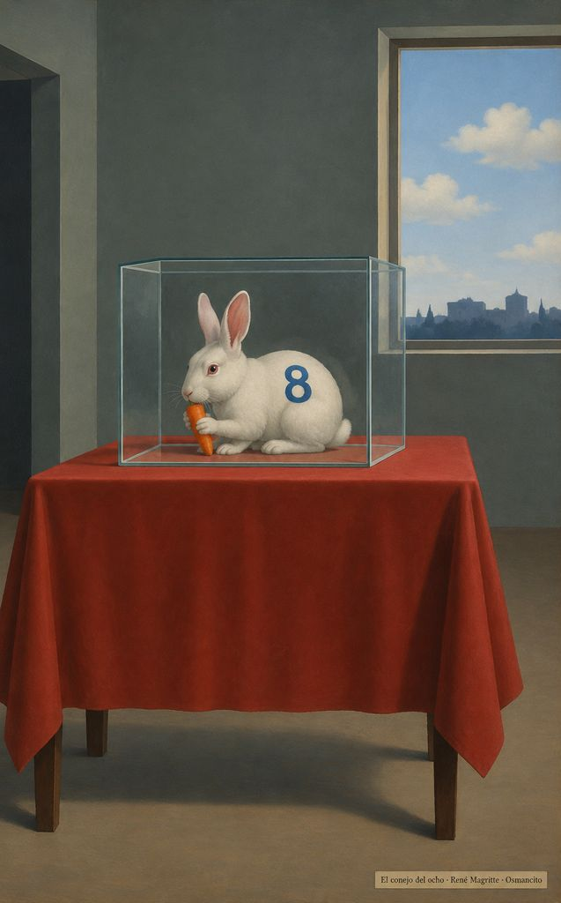
La sección se titula «What Writing Is» («Qué es escribir») y abre con una palabra: «Telepathy, of course» («Telepatía, por supuesto»). King dice que escribir es telepatía y pasa a hablar de dónde lee:
La telepatía es la supuesta transmisión de pensamientos de una mente a otra sin palabras ni señales; esa definición viene de fuera del libro.
So I read where I can, but I have a favorite place and probably you do, too—a place where the light is good and the vibe is usually strong.
Frase 1559
Así que leo donde puedo, pero tengo un lugar favorito y probablemente tú también —un lugar donde la luz es buena y la vibra suele ser fuerte.
El suyo es una silla azul; el del lector, quizá un sofá o la cama. Propone un supuesto:
So let’s assume that you’re in your favorite receiving place just as I am in the place where I do my best transmitting.
Frase 1562
Así que supongamos que estás en tu lugar favorito de recepción, igual que yo estoy en el lugar donde hago mi mejor transmisión.
Esa telepatía debe cruzar el tiempo, de 1997 a 2000. Para probarla describe una mesa con un mantel rojo y una jaula. De la jaula dice:
For one thing, it is described in terms of rough comparison, which is useful only if you and I see the world and measure the things in it with similar eyes.
Frase 1579
Para empezar, se describe en términos de comparación aproximada, lo cual solo es útil si tú y yo vemos el mundo y medimos las cosas que hay en él con ojos parecidos.
Lo que importa no es el detalle sino el número 8 en el lomo de un conejo, que todos vemos sin que nadie lo diga. Resume:
I sent you a table with a red cloth on it, a cage, a rabbit, and the number eight in blue ink.
Frase 1595
Te envié una mesa con un mantel rojo encima, una jaula, un conejo y el número ocho en tinta azul.
Esa es la prueba: King y quien lo lee no se han visto nunca, y los dos ven el mismo 8 azul. Un texto escrito pasa de una cabeza a otra, a través de los años.
Con eso da por probada la telepatía y se pone serio:
I’m not going to belabor the point, but before we go any further you have to understand that I’m not trying to be cute; there is a point to be made.
Frase 1599
No voy a machacar el punto, pero antes de ir más lejos tienes que entender que no intento hacerme el simpático; hay un punto que plantear.
Ese punto es la seriedad: a la página en blanco no se llega a la ligera, aunque sin reverencia ni renunciar al humor. Cierra con una condición:
If you can take it seriously, we can do business.
Frase 1608
Si puedes tomártelo en serio, podemos hacer negocios.
Si no puedes o no quieres, cierra el libro y haz otra cosa: «Wash the car, maybe» («Lava el coche, tal vez»).
Caja de herramientas
T1 · La caja heredada
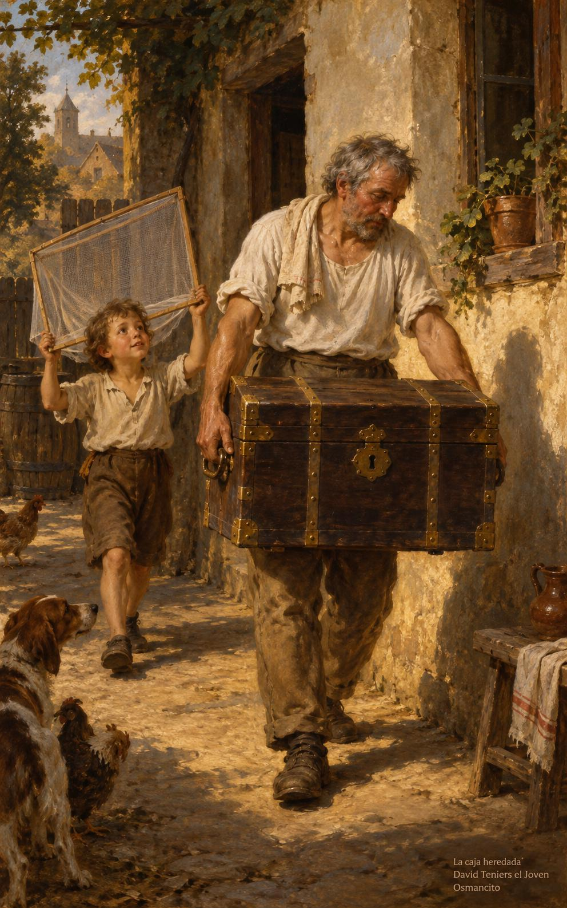
«Toolbox» significa «Caja de herramientas». King abre recordando una canción de John Prine sobre un abuelo carpintero: el suyo también lo fue. Aquel abuelo, Guy Pillsbury, llamado Fazza, fabricó una caja que heredó Oren, tío de King. Tenía cajones, herrajes y un forro de flores. King se dirige al lector:
You never saw a toolbox like this one for sale at Wal-Mart or Western Auto, believe me.
Frase 1626
Nunca viste una caja de herramientas como esta a la venta en Wal-Mart o Western Auto, créeme.
When my uncle first got it, he found a brass etching of a famous Homer painting—I believe it was The Undertow—lying in the bottom.
Frase 1627
Cuando mi tío la recibió, encontró en el fondo un grabado en latón de un cuadro famoso de Homer, creo que era The Undertow.
Homer es el artista cuya finca mantenía el abuelo, según cuenta King. El grabado no es el dibujo de esta unidad: aquí vemos la escena del niño y su tío.
Años después, Oren hizo autenticar y vendió el grabado. En el recuerdo siguiente, King lo acompaña a cambiar una mosquitera, la malla que impide entrar a los insectos. La caja pesa tanto que los niños apenas pueden moverla. Oren pide un destornillador; sirve cualquiera de los dos:
The broken screen was held on by loophead screws, and it really didn’t matter whether he used a regular screwdriver or the Phillips on them; with loopheads you just stuck the screwdriver’s barrel through the hole at the top of the screw and then spun it the way you spin a tire iron once you’ve got the lugnuts loose.
Frase 1648
La mosquitera rota estaba sujeta con tornillos de cabeza de argolla, y en realidad daba igual que usara en ellos un destornillador plano o uno de estrella; con las argollas bastaba pasar la varilla del destornillador por el agujero de arriba y luego girarlo como giras una llave de ruedas cuando ya has aflojado las tuercas.
Oren desmonta la malla vieja, comprueba los agujeros de la nueva y vuelve a apretar los tornillos.
When the screen was secure, Uncle Oren gave me the screwdriver and told me to put it back in the toolbox and “latch her up.”
Frase 1654
Cuando la mosquitera quedó bien sujeta, el tío Oren me dio el destornillador y me dijo que lo guardara en la caja de herramientas y que la cerrara con sus pestillos.
El niño obedece, pero no entiende semejante carga:
I asked him why he’d lugged Fazza’s toolbox all the way around the house, if all he’d needed was that one screwdriver.
Frase 1656
Le pregunté por qué había arrastrado la caja de herramientas de Fazza alrededor de toda la casa si solo había necesitado aquel destornillador.
La respuesta del tío lleva al oficio de escribir:
I want to suggest that to write to your best abilities, it behooves you to construct your own toolbox and then build up enough muscle so you can carry it with you.
Frase 1661
Quiero sugerirte que, para escribir lo mejor que puedas, te conviene construir tu propia caja de herramientas y después desarrollar músculo suficiente para poder llevarla contigo.
La caja del abuelo tenía tres niveles. King propone al menos cuatro para el lector:
You could have five or six, I suppose, but there comes a point where a toolbox becomes too large to be portable and thus loses its chief virtue.
Frase 1665
Podrías tener cinco o seis, supongo, pero llega un momento en que una caja de herramientas se vuelve demasiado grande para transportarla y pierde así su principal virtud.
El resto del tramo revisa la herramienta más común: el vocabulario. Contrasta escritores de palabras largas con otros de palabras sencillas, incluye el habla callejera y pasa a la precisión del significado. Termina con la adecuación: una expresión puede servir en una compañía y ofender en otra.
T2 · Las montañas flotan
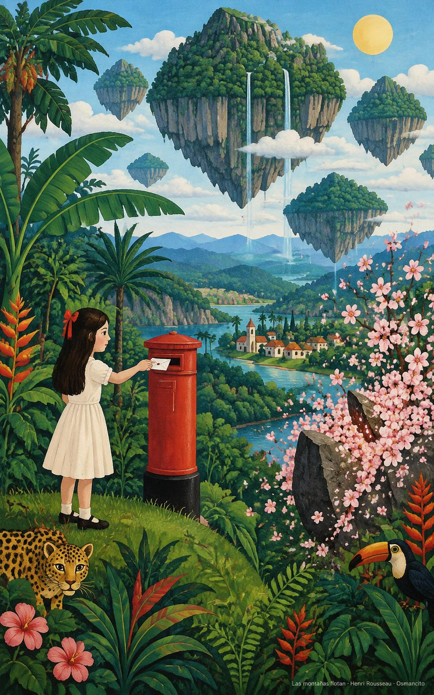
Después del vocabulario, King coloca otra herramienta al alcance del lector:
You’ll also want grammar on the top shelf of your toolbox, and don’t annoy me with your moans of exasperation or your cries that you don’t understand grammar, you never did understand grammar, you flunked that whole semester in Sophomore English, writing is fun but grammar sucks the big one.
Frase 1736
También querrás tener la gramática en el estante superior de tu caja de herramientas, y no me fastidies con tus gemidos de exasperación ni tus gritos de que no entiendes la gramática, nunca entendiste la gramática, suspendiste todo aquel semestre de Inglés de segundo curso, escribir es divertido pero la gramática es una mierda.
Lo tranquiliza: aquí no está en la escuela. King recuerda que disfrutó estudiando y enseñando gramática; decide, sin embargo, no dedicarle un tratado:
In the end I decided against it, probably for the same reason William Strunk decided not to recap the basics when he wrote the first edition of The Elements of Style: if you don’t know, it’s too late.
Frase 1750
Al final decidí no hacerlo, probablemente por la misma razón por la que William Strunk decidió no repasar los fundamentos cuando escribió la primera edición de Los elementos del estilo: si no los sabes, ya es demasiado tarde.
Strunk es el autor del manual de estilo que King usa como referencia. La gramática estudia cómo se organizan las palabras; ese nombre no sustituye la práctica de organizarlas.
King pasa por las clases de palabras, el sujeto y el verbo. Acepta que una oración puede romper las reglas, pero vuelve al consejo de Strunk:
Yet he goes on to add this thought, which I urge you to consider: “Unless he is certain of doing well, [the writer] will probably do best to follow the rules.”
Frase 1766
Sin embargo, añade esta idea, que te insto a considerar: «A menos que esté seguro de hacerlo bien, [el escritor] probablemente hará mejor en seguir las reglas».
Después prueba combinaciones mínimas: las montañas pueden flotar en una oración bien formada. Termina recomendando un manual de gramática de Warriner: casi todo lo necesario, dice, cabe en sus guardas iniciales y finales.
T3 · La cuerda tendida
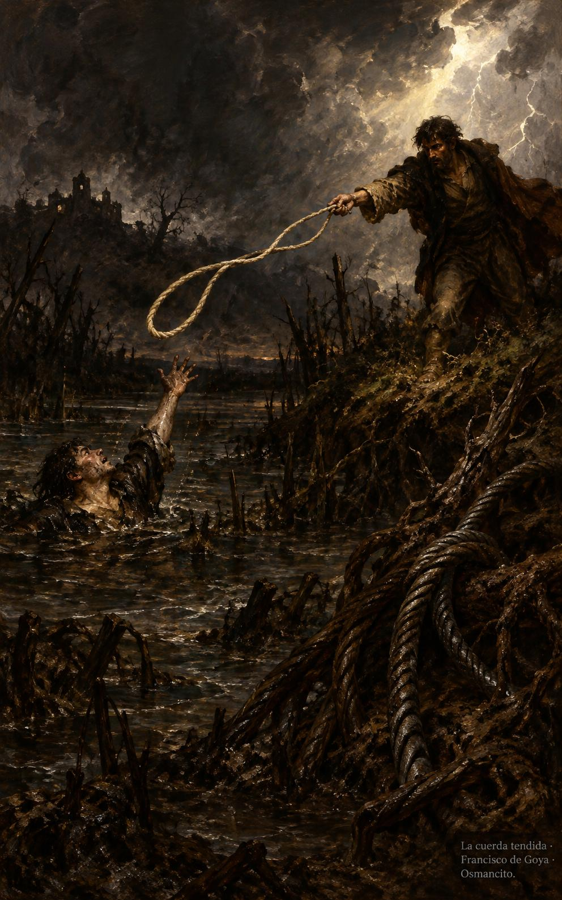
King empieza por las aversiones de William Strunk, autor de un manual de estilo, y añade las suyas. La primera es la voz pasiva: una construcción donde el sujeto recibe la acción en vez de hacerla. Recomienda evitarla:
I’m not the only one who says so; you can find the same advice in The Elements of Style.
Frase 1798
No soy el único que lo dice; puedes encontrar el mismo consejo en Los elementos del estilo.
Compara formas pasivas y activas, admite excepciones y vuelve a quien recibe el texto: el lector. Luego cambia de herramienta:
The other piece of advice I want to give you before moving on to the next level of the toolbox is this: The adverb is not your friend.
Frase 1833
El otro consejo que quiero darte antes de pasar al siguiente nivel de la caja de herramientas es este: el adverbio no es tu amigo.
Un adverbio modifica un verbo, un adjetivo u otro adverbio, como explica el propio King. Aquí pone a prueba «firmly», «con firmeza», al cerrar una puerta.
La diferencia entre cerrar y dar un portazo parece justificar esa precisión. King pide mirar alrededor de la frase:
You can argue that it expresses a degree of difference between He closed the door and He slammed the door, and you’ll get no argument from me … but what about context?
Frase 1841
Puedes argumentar que expresa una diferencia de grado entre Él cerró la puerta y Él cerró la puerta de un portazo, y no voy a discutírtelo... pero ¿qué pasa con el contexto?
De la puerta pasa al diálogo:
I insist that you use the adverb in dialogue attribution only in the rarest and most special of occasions … and not even then, if you can avoid it.
Frase 1857
Insisto en que uses el adverbio al atribuir un diálogo solo en las ocasiones más raras y especiales... y ni siquiera entonces, si puedes evitarlo.
Atribuir un diálogo es indicar quién habla: «ella dijo». El adverbio añade cómo lo dice. King compara ejemplos y muestra cómo ese añadido puede repetir lo que ya se entiende.
Entre esos ejemplos aparecen los «Swifties», frases de las aventuras del inventor Tom Swift que dieron lugar a un juego de palabras:
When debating whether or not to make some pernicious dandelion of an adverb part of your dialogue attribution, I suggest you ask yourself if you really want to write the sort of prose that might wind up in a party-game.
Frase 1875
Cuando te plantees convertir algún pernicioso diente de león de adverbio en parte de la atribución de tu diálogo, te sugiero que te preguntes si de verdad quieres escribir el tipo de prosa que podría acabar en un juego de fiesta.
King prefiere «dijo» y pone al novelista Larry McMurtry como ejemplo. Pero su propia ficción no siempre obedece:
The reader has a perfect right to ask the question, and I have a duty to provide an honest answer.
Frase 1893
El lector tiene todo el derecho a hacer la pregunta, y yo tengo el deber de dar una respuesta honesta.
Admite que también él usa adverbios:
When I do it, it’s usually for the same reason any writer does it: because I am afraid the reader won’t understand me if I don’t.
Frase 1899
Cuando lo hago, suele ser por la misma razón por la que lo hace cualquier escritor: porque temo que el lector no me entienda si no lo hago.
Relaciona esos recursos con el miedo y la afectación, no con una falta de herramientas. Reconoce también los deslices de E. B. White, colaborador de Strunk en el manual. Termina pidiendo trabajo, no impecabilidad:
All I ask is that you do as well as you can, and remember that, while to write adverbs is human, to write he said or she said is divine.
Frase 1918
Lo único que te pido es que lo hagas lo mejor que puedas y recuerdes que, aunque escribir adverbios es humano, escribir él dijo o ella dijo es divino.
T4 · El pulso interior
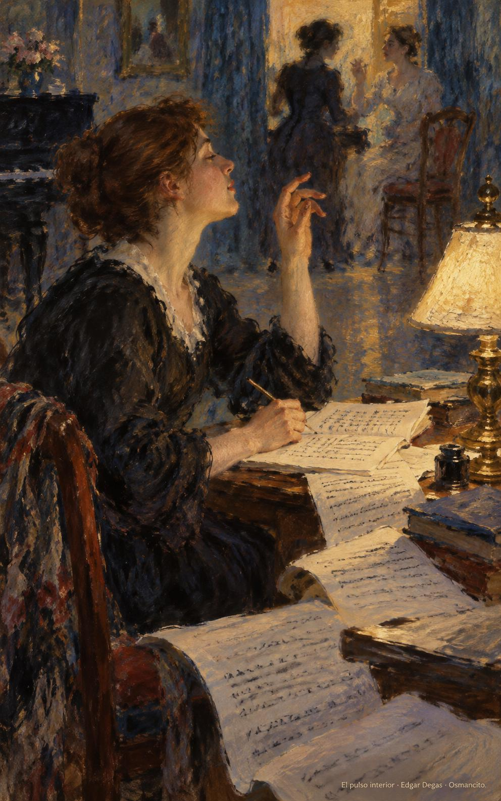
King levanta el primer nivel de la caja, donde dejó vocabulario y gramática, y pasa al estilo. Invita a abrir una novela por el medio:
Observe the pattern—the lines of type, the margins, and most particularly the blocks of white space where paragraphs begin or leave off.
Frase 1927
Observa el dibujo: las líneas impresas, los márgenes y, muy especialmente, los bloques de espacio blanco donde empiezan o terminan los párrafos.
En un párrafo explicativo, una oración presenta el asunto y las demás lo desarrollan. King contrasta esa organización con el ritmo más libre de la ficción.
Ilustra la explicación con un ensayo sobre una hermana destructiva, recuerda a sus alumnos y luego cambia de terreno:
The more fiction you read and write, the more you’ll find your paragraphs forming on their own.
Frase 1962
Cuanta más ficción leas y escribas, más descubrirás que tus párrafos se forman solos.
Recomienda dejar que aparezcan al escribir:
If you don’t like it later on, fix it then.
Frase 1965
Si después no te gusta, arréglalo entonces.
Para mostrarlo inventa una conversación: Dale interroga a Big Tony sobre O’Leary. El habla de Tony altera la gramática y la ortografía. King enumera lo que podría enseñar con ese pasaje:
«Dunno» y «gonna» representan pronunciaciones informales de «no sé» y «ir a». La línea inglesa de Tony significa «Cuando tu historia es verdad, no cambia»; la traducción conserva ese ejemplo en inglés para que se vea la falta de coma.
It would encompass dialogue attribution (not necessary if we know who’s speaking; Rule 17, omit needless words, in action), phonetically rendered language (dunno, gonna), the use of the comma (there is none in the line When your story’s true it don’t change because I want you to hear it coming out all in one breath, without a pause), the decision not to use the apostrophe where the speaker has dropped a g … and all that stuff is just from the top level of the toolbox.
Frase 1983
Abarcaría la atribución del diálogo (innecesaria si sabemos quién habla; la regla 17, omitir palabras innecesarias, en acción), el lenguaje representado fonéticamente (dunno, gonna), el uso de la coma (no hay ninguna en la línea When your story’s true it don’t change porque quiero que la oigas salir de corrido, sin una pausa), la decisión de no usar el apóstrofo donde el hablante ha suprimido una g... y todo eso sale tan solo del nivel superior de la caja de herramientas.
Deja a un lado esas herramientas y vuelve a los cortes:
Notice how easily they flow, with the turns and rhythms of the story dictating where each one begins and ends.
Frase 1986
Fíjate en la facilidad con que fluyen, con los giros y ritmos de la historia dictando dónde empieza y termina cada uno.
Otros párrafos separan a los hablantes. Uno introduce una pausa:
The most interesting paragraph is the fifth one: Big Tony sat down, lit a cigarette, ran a hand through his hair.
Frase 1989
El párrafo más interesante es el quinto: Big Tony se sentó, encendió un cigarrillo y se pasó una mano por el pelo.
King examina su brevedad, la compara con otros recursos narrativos y llega al párrafo como unidad de coherencia. No le fija una longitud:
You must learn to use it well if you are to write well.
Frase 2017
Debes aprender a usarlo bien si quieres escribir bien.
El cierre pide mucha práctica: aprender el pulso.
T5 · La casa viva
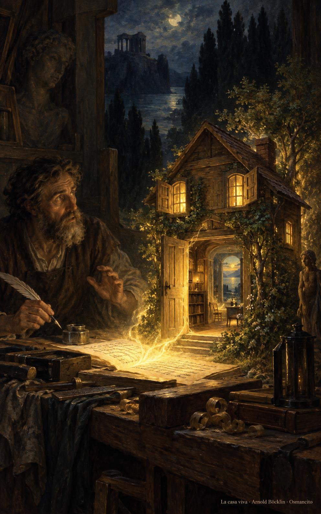
King pide volver a tomar el libro de la estantería. Su peso recuerda el compromiso de escribirlo y leerlo. Las palabras se reúnen en párrafos; uno puede cobrar vida:
Imagine, if you like, Frankenstein’s monster on its slab.
Frase 2029
Imagina, si quieres, al monstruo de Frankenstein sobre su losa.
Frankenstein es aquí el creador del ser hecho de partes cosidas, como aclara la frase siguiente; no es el nombre del monstruo.
El relámpago sale del párrafo:
You feel as Victor Frankenstein must have when the dead conglomeration of sewn-together spare parts suddenly opened its watery yellow eyes.
Frase 2032
Te sientes como debió sentirse Victor Frankenstein cuando la conglomeración muerta de piezas de repuesto cosidas de pronto abrió sus ojos amarillos y acuosos.
Oh my God, it’s breathing, you realize.
Frase 2033
Dios mío, está respirando, te das cuenta.
De esa sorpresa pasa a construir ficción y habitar mundos largos. El tramo cierra recordando:
We are talking about tools and carpentry, about words and style … but as we move along, you’d do well to remember that we are also talking about magic.
Frase 2053
Estamos hablando de herramientas y carpintería, de palabras y estilo... pero, conforme avancemos, harías bien en recordar que también estamos hablando de magia.
Mientras escribo
La musa del sótano
«On Writing» («Mientras escribo») abre sin anestesia: un manual de adiestramiento promete que no hay perros malos, pero King no miente: malos escritores sí los hay. Forman la pirámide del talento: abajo los malos, encima los competentes, después los buenos y, sobre todos, los genios. La buena escritura, dice, es dominar los fundamentos —vocabulario, gramática, estilo— y llenar la caja de herramientas; de ahí nace su premisa básica. Muchos críticos defienden un sistema de castas contra Chandler y contra Dickens. King lo asume:
So yes—I expect to be accused by some of promoting a brainless and happy Horatio Alger philosophy, defending my own less-than-spotless reputation while I’m at it, and of encouraging people who are “just not our sort, old chap” to apply for membership at the country club.
Frase 2092
Así que sí: espero que algunos me acusen de promover una filosofía estúpida y feliz a lo Horatio Alger, de defender de paso mi propia reputación, que no está del todo impecable, y de animar a gente que «sencillamente no es de los nuestros, viejo amigo» a solicitar la membresía del club de campo.
Horatio Alger fue un escritor estadounidense del siglo XIX, autor de novelas en las que un muchacho pobre prospera a base de esfuerzo; su nombre quedó como sinónimo de ascenso por mérito propio. Esta aclaración viene de fuera del libro.
Y esa premisa es:
But before we go on, let me repeat my basic premise: if you’re a bad writer, no one can help you become a good one, or even a competent one.
Frase 2094
Pero antes de seguir, déjame repetir mi premisa básica: si eres un mal escritor, nadie puede ayudarte a convertirte en uno bueno, ni siquiera en uno competente.
Si eres bueno y quieres ser grande, olvídalo. Lo que sigue es todo lo que sabe sobre escribir buena ficción. Promete dos cosas; la primera:
I’ll be as brief as possible, because your time is valuable and so is mine, and we both understand that the hours we spend talking about writing is time we don’t spend actually doing it.
Frase 2097
Seré lo más breve posible, porque tu tiempo es valioso y el mío también, y los dos entendemos que las horas que pasamos hablando de escribir son tiempo que no pasamos escribiendo de verdad.
La segunda es ser alentador, porque ama este trabajo:
I want you to love it, too.
Frase 2099
Quiero que tú también lo ames.
Pero exige trabajo: la musa existe, aunque no baja a esparcir polvo de hadas; vive en el sótano, y hay que descender a su nivel, amueblarle un apartamento y trabajar duro mientras ella fuma puros y admira sus trofeos de boliche:
It’s right that you should do all the work and burn all the midnight oil, because the guy with the cigar and the little wings has got a bag of magic.
Frase 2109
Es justo que hagas todo el trabajo y te quemes hasta la madrugada, porque el tipo del puro y las alitas tiene una bolsa de magia.
Y concluye: «Believe me, I know» («Créeme, lo sé»).
W1 · Leer mucho, escribir mucho
«If you want to be a writer, you must do two things above all others: read a lot and write a lot» («Si quieres ser escritor, debes hacer dos cosas por encima de todas: leer mucho y escribir mucho»). King lee setenta u ochenta libros al año por puro gusto; aun así, todo libro enseña, y los malos enseñan más: una novela de mineros de asteroides de Murray Leinster, enamorada de la palabra «zestful» («chispeante»), fue su vacuna y su primer «yo lo hago mejor». La buena prosa enseña estilo y verdad, y dejarse arrastrar por una gran historia forma al escritor. Leer mezcla estilos —Bradbury, Cain, Lovecraft— hasta dar voz propia. Quien no tiene tiempo de leer no tiene tiempo ni herramientas para escribir. Y la televisión es lo último que necesita un aspirante:
You must be prepared to do some serious turning inward toward the life of the imagination, and that means, I’m afraid, that Geraldo, Keith Obermann, and Jay Leno must go.
Frase 2171
Debes estar preparado para volverte seriamente hacia dentro, hacia la vida de la imaginación, y eso significa, me temo, que Geraldo, Keith Obermann y Jay Leno deben irse.
Geraldo, Keith Obermann y Jay Leno son rostros de la televisión estadounidense: entrevistas, noticias y humor nocturno. Esta aclaración viene de fuera del libro.
La televisión roba tiempo; destetado de ella, casi todos disfrutan leer:
I’d like to suggest that turning off that endlessly quacking box is apt to improve the quality of your life as well as the quality of your writing.
Frase 2174
Quisiera sugerir que apagar esa caja que grazna sin parar puede mejorar la calidad de tu vida y también la calidad de tu escritura.
¿Cuánto sacrificio es? ¿Cuántas reposiciones de «Frasier» o tertulianos políticos hacen una vida completa?
Oh man, don’t get me started.
Frase 2179
Ay, hombre, no me hagas empezar.
Caso cerrado. A los siete años, su hijo Owen se enamoró del saxofón de Clarence Clemons, de la banda de Springsteen; le regalaron uno y le pagaron clases:
Seven months later I suggested to my wife that it was time to discontinue the sax lessons, if Owen concurred.
Frase 2187
Siete meses después le sugerí a mi esposa que era hora de suspender las clases de saxofón, si Owen estaba de acuerdo.
Owen aceptó con alivio. Practicaba solo en los horarios fijados; dominaba escalas y notas, pero nunca despegaba; terminada la práctica, el saxofón volvía al estuche:
What this suggested to me was that when it came to the sax and my son, there was never going to be any real play-time; it was all going to be rehearsal.
Frase 2192
Lo que esto me sugirió fue que, en lo del saxofón y mi hijo, nunca iba a haber un verdadero tiempo de juego; todo iba a ser ensayo.
Sin alegría no funciona: mejor otro campo donde el talento rinda más. El talento vuelve absurdo el ensayo: cuando algo se te da, lo haces hasta sangrar. Eso vale para leer y escribir:
The sort of strenuous reading and writing program I advocate—four to six hours a day, every day—will not seem strenuous if you really enjoy doing these things and have an aptitude for them; in fact, you may be following such a program already.
Frase 2200
El tipo de programa extenuante de lectura y escritura que defiendo —de cuatro a seis horas al día, todos los días— no parecerá extenuante si de verdad disfrutas haciendo estas cosas y tienes aptitud para ellas; de hecho, puede que ya sigas un programa así.
Añade, por si acaso:
If you feel you need permission to do all the reading and writing your little heart desires, however, consider it hereby granted by yours truly.
Frase 2201
Sin embargo, si sientes que necesitas permiso para leer y escribir todo lo que tu corazoncito desea, considéralo por la presente concedido por tu seguro servidor.
Leer crea soltura e intimidad con la escritura: uno llega al país del escritor con los papeles en regla:
It also offers you a constantly growing knowledge of what has been done and what hasn’t, what is trite and what is fresh, what works and what just lies there dying (or dead) on the page.
Frase 2204
También te ofrece un conocimiento siempre creciente de qué se ha hecho y qué no, qué es trillado y qué es fresco, qué funciona y qué simplemente yace ahí muriéndose (o muerto) en la página.
Cuanto más leas, menos ridículo harás con la pluma o el procesador de textos.
W2 · Dos mil palabras
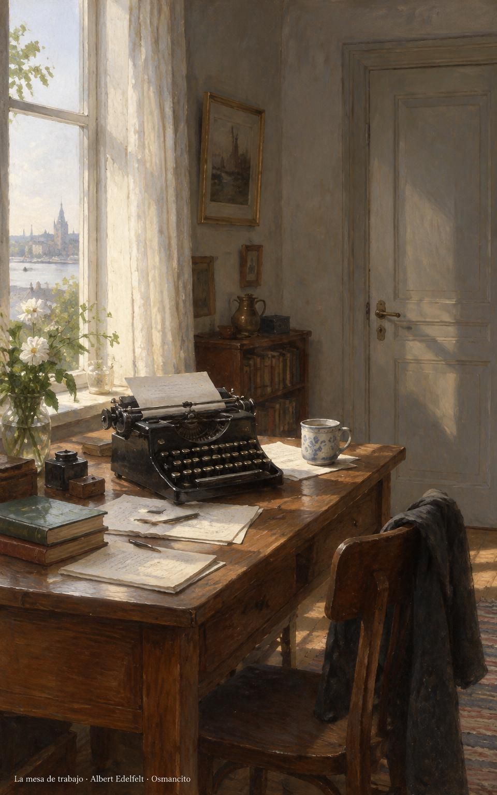
Arranca la segunda parte:
If “read a lot, write a lot” is the Great Commandment—and I assure you that it is—how much writing constitutes a lot?
Frase 2206
Si «leer mucho, escribir mucho» es el Gran Mandamiento —y te aseguro que lo es—, ¿cuánto escribir es mucho?
El Gran Mandamiento alude al mandamiento mayor que Jesús señala en los Evangelios; aquí funciona como la regla primera del oficio. Esta aclaración viene de fuera del libro.
La respuesta varía de escritor a escritor:
One of my favorite stories on the subject—probably more myth than truth—concerns James Joyce. According to the story, a friend came to visit him one day and found the great man sprawled across his writing desk in a posture of utter despair.
Frase 2208
Una de mis historias favoritas sobre el tema —probablemente más mito que verdad— tiene que ver con James Joyce. Según la historia, un amigo fue a visitarlo un día y encontró al gran hombre desplomado sobre su escritorio en una postura de absoluta desesperación.
El amigo lo halló desplomado sobre el escritorio: siete palabras, y sin saber en qué orden ponerlas. En el extremo opuesto, Anthony Trollope escribía dos horas y media cada mañana antes de su empleo en correos; a media frase, la dejaba para mañana. John Creasey firmó quinientas novelas; Harper Lee, una sola:
Which is okay, but I always wonder two things about these folks: how long did it take them to write the books they did write, and what did they do the rest of their time?
Frase 2230
Lo cual está bien, pero siempre me pregunto dos cosas sobre esta gente: cuánto tardaron en escribir los libros que sí escribieron y qué hicieron con el resto de su tiempo.
¿Tejer mantas? ¿Organizar bazares? Su horario: mañanas para la obra nueva, tardes para la siesta y las cartas, noches para leer y la familia. Si no escribe a diario, los personajes se enrancian y el trabajo se vuelve trabajo. A los entrevistadores les decía que no escribía ni en Navidad ni en su cumpleaños. Mentía:
I told them that because if you agree to an interview you have to say something, and it plays better if it’s something at least half-clever.
Frase 2250
Les decía eso porque, si aceptas una entrevista, tienes que decir algo, y funciona mejor si es algo al menos medio ingenioso.
La verdad: cuando escribe, escribe todos los días. Un primer borrador no debería pasar de tres meses. Su cuota: diez páginas diarias, dos mil palabras, salgan fácil o difícil:
Either way is fine with me, but only under dire circumstances do I allow myself to shut down before I get my 2,000 words.
Frase 2267
De las dos maneras me va bien, pero solo en circunstancias graves me permito parar antes de alcanzar mis dos mil palabras.
La mayor ayuda es un ambiente sereno. Su secreto, dice: conservar la salud y seguir casado con una mujer que no le aguanta ni una; y al revés: escribir con placer estabiliza su salud y su hogar.
W3 · Una puerta cerrada
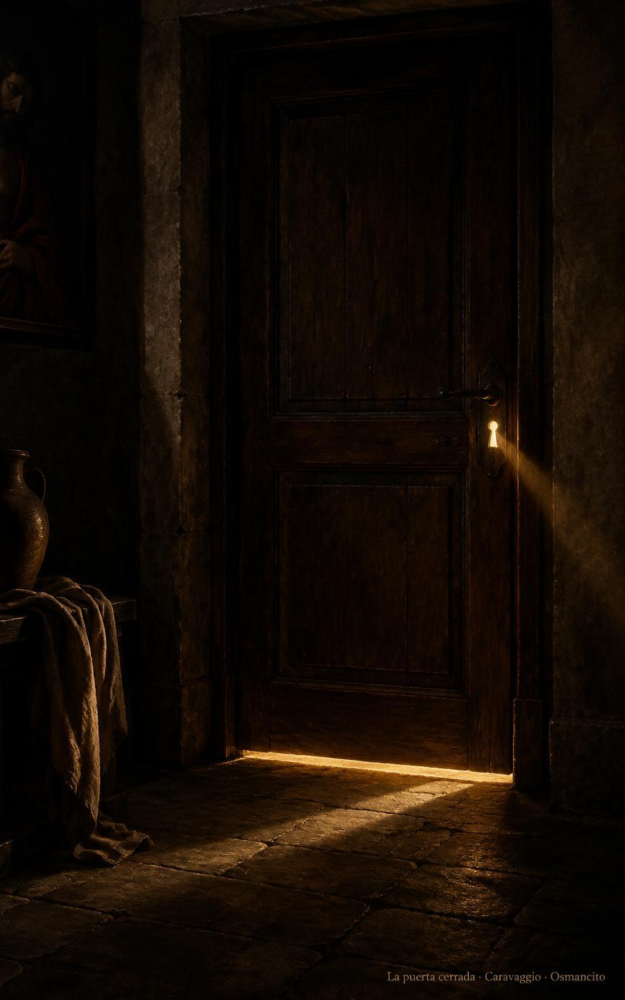
Se puede leer casi en cualquier parte, pero escribir pide un lugar propio. No hace falta lujo: King escribió «Carrie» y «'Salem's Lot» en el cuarto de lavado de una casa rodante:
The space can be humble (probably should be, as I think I have already suggested), and it really needs only one thing: a door which you are willing to shut.
Frase 2278
El espacio puede ser humilde (probablemente debería serlo, como creo haber sugerido ya), y en realidad solo necesita una cosa: una puerta que estés dispuesto a cerrar.
La puerta cerrada le dice al mundo que vas en serio. Fíjate una meta diaria, baja al principio:
I suggest a thousand words a day, and because I’m feeling magnanimous, I’ll also suggest that you can take one day a week off, at least to begin with.
Frase 2282
Sugiero mil palabras al día y, como me siento magnánimo, sugiero también que puedes tomarte un día libre a la semana, al menos al principio.
No más, o perderás la urgencia; la puerta no se abre hasta cumplir la meta. ¿Cómo se escribe? «Una palabra cada vez», respondió King:
The door closes the rest of the world out; it also serves to close you in and keep you focused on the job at hand.
Frase 2291
La puerta deja fuera al resto del mundo; también sirve para encerrarte a ti y mantenerte concentrado en la tarea.
Nada de teléfono, televisor ni videojuegos. King trabaja con rock duro a todo volumen: la música es otra puerta cerrada. Escribir es sueño creativo; el horario fijo habitúa la mente. No esperes a la musa: esto es un oficio, no la ouija. Haz que sepa dónde estarás cada día:
If he does know, I assure you that sooner or later he’ll start showing up, chomping his cigar and making his magic.
Frase 2313
Si lo sabe, te aseguro que tarde o temprano empezará a aparecer, masticando su puro y haciendo su magia.
La ouija es un tablero con letras que se usa en sesiones espiritistas para supuestamente contactar con espíritus. Esta aclaración viene de fuera del libro.
W4 · Escribe lo que sabes
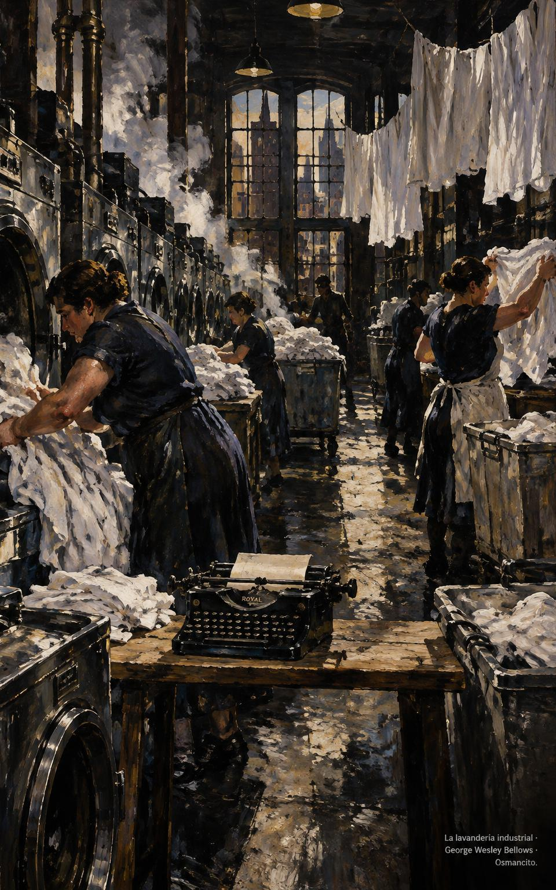
Ya estás en tu cuarto con la puerta cerrada y mil palabras diarias por delante. ¿Sobre qué escribir? Lo que quieras, si dices la verdad. «Escribe lo que sabes», mandan los talleres; ¿cómo encaja ahí una nave espacial?
I think you begin by interpreting “write what you know” as broadly and inclusively as possible.
Frase 2322
Creo que se empieza interpretando «escribe lo que sabes» de la forma más amplia e inclusiva posible.
El plomero sabe de tuberías, pero el corazón y la imaginación también saben. Y el género:
In terms of genre, it’s probably fair to assume that you will begin by writing what you love to read—certainly I have recounted my early love affair with the EC horror comics until the tale has gone stale.
Frase 2327
En cuanto al género, es probablemente justo suponer que empezarás escribiendo lo que amas leer; desde luego, yo he contado mi temprano idilio con los cómics de terror de EC hasta que el cuento se ha vuelto rancio.
EC fue una editorial estadounidense de cómics de terror de los años cincuenta. Esta aclaración viene de fuera del libro.
Amaba esos cómics y el cine de terror; de ahí salieron sus primeros relatos: fue hecho con amor por la noche y el ataúd inquieto:
If you disapprove, I can only shrug my shoulders.
Frase 2330
Si lo desapruebas, solo puedo encogerme de hombros.
Es lo que tiene. Fan de la ciencia ficción, escribe ciencia ficción; fan de los misterios, misterios. Nada de malo hay. Lo que sí estaría mal:
What would be very wrong, I think, is to turn away from what you know and like (or love, the way I loved those old ECs and black-and-white horror flicks) in favor of things you believe will impress your friends, relatives, and writing-circle colleagues.
Frase 2335
Lo que estaría muy mal, creo, es darle la espalda a lo que sabes y te gusta (o amas, como yo amaba aquellos viejos EC y aquellas películas de terror en blanco y negro) en favor de cosas que crees que impresionarán a tus amigos, parientes y colegas del taller.
Igual de mal es escribir por dinero lo que no amas: no funciona. Nadie elige su material como un inversionista elige acciones, y un libro no se apunta como un misil: las imitaciones calculadas salen pálidas:
Write what you like, then imbue it with life and make it unique by blending in your own personal knowledge of life, friendship, relationships, sex, and work.
Frase 2355
Escribe lo que te gusta; luego infúndele vida y hazlo único mezclándole tu propio conocimiento personal de la vida, la amistad, las relaciones, el sexo y el trabajo.
Sobre todo el trabajo: la gente ama leer sobre trabajo. Un plomero puede escribir sobre un plomero en el espacio; no es dar lecciones, es enriquecer el relato. Un ejemplo:
Consider John Grisham’s breakout novel, The Firm.
Frase 2366
Considera «The Firm», la novela que lanzó a John Grisham.
Un abogado joven descubre que su bufete trabaja para la mafia. Grisham nunca estuvo ahí, pero fue abogado y no olvidó la lucha; por eso su mundo inventado se cree. Dijo la verdad de lo que sabía:
You as a beginning writer would do well not to imitate the lawyers-in-trouble genre Grisham seems to have created but to emulate Grisham’s openness and inability to do anything other than get right to the point.
Frase 2385
Tú, como escritor principiante, harías bien no en imitar el género de abogados-en-apuros que Grisham parece haber creado, sino en emular su franqueza y su incapacidad de hacer otra cosa que ir directo al grano.
Grisham conoce a los abogados; lo tuyo te hace único. Sé valiente: mapea las posiciones del enemigo, vuelve y cuéntalo. Y plomeros en el espacio no es mal arranque.
W5 · Excavar el fósil
Narración, descripción y diálogo: las tres partes de una historia. ¿Y la trama? En ninguna parte:
I won’t try to convince you that I’ve never plotted any more than I’d try to convince you that I’ve never told a lie, but I do both as infrequently as possible.
Frase 2394
No intentaré convencerte de que nunca he trazado una trama, igual que no intentaría convencerte de que nunca he dicho una mentira, pero hago ambas cosas lo menos posible.
Desconfía de la trama: la vida no la tiene y la planificación mata la espontaneidad. Mejor ser claros:
It’s best that I be as clear about this as I can—I want you to understand that my basic belief about the making of stories is that they pretty much make themselves.
Frase 2396
Mejor que sea lo más claro posible en esto: quiero que entiendas que mi creencia básica sobre la creación de historias es que ellas prácticamente se crean solas.
El escritor solo les da un lugar para crecer y las transcribe. Si lo ves así, pueden trabajar juntos. Y si no:
If, on the other hand, you decide I’m crazy, that’s fine.
Frase 2399
Si, en cambio, decides que estoy loco, está bien.
No serías el primero. En «The New Yorker» dijo que las historias son fósiles: reliquias de un mundo preexistente que el escritor excava con su caja de herramientas. La trama es el martillo neumático que rompe casi tanto como libera; King prefiere la situación: personajes en un aprieto, mirar qué hacen y anotarlo. El desenlace suele sorprenderlo, primer lector de su libro. En un vuelo a Londres soñó con un escritor secuestrado por una fan psicótica con una cerda llamada Misery; lo apuntó en una servilleta de cóctel. Lo que recordaba de ella: «Habla con seriedad, pero sin mirar a los ojos. Es una ausencia de hiato.» Y añade:
(Whatever that means; remember, I’d just woken up.)
Frase 2444
(Lo que sea que eso signifique; recuerda que acababa de despertar.)
No era burla, juraba: la cerda se llamaba Misery por amor de fan. En el hotel Brown's, sin dormir, King pidió un sitio tranquilo y el conserje lo sentó en el que había sido escritorio de Rudyard Kipling; escribió dieciséis páginas a mano. Al agradecerlo, el conserje sonrió: «Kipling murió ahí, de un derrame, mientras escribía.» El título de trabajo: «The Annie Wilkes Edition»:
When I sat down at Mr. Kipling’s beautiful desk I had the basic situation—crippled writer, psycho fan—firmly fixed in my mind.
Frase 2467
Cuando me senté al hermoso escritorio del señor Kipling, tenía la situación básica —escritor lisiado, fan psicótica— firmemente fijada en la mente.
La historia aún no existía —o sí, enterrada como reliquia—, pero no hacía falta conocerla para empezar: había localizado el fósil y el resto sería excavación cuidadosa:
I’d suggest that what works for me may work equally well for you.
Frase 2470
Sugiero que lo que funciona para mí puede funcionar igual de bien para ti.
Puede liberarte de la tiranía del esquema. King creía saber el desenlace: Annie obligaría a Paul a escribir una novela solo para ella, encuadernada en piel de cerdo... y la edición final acabaría encuadernada en la piel de Paul. No fue así: Paul resultó más ingenioso, Annie más compleja, y cada detalle surgió de la situación. «Gerald's Game» y «The Girl Who Loved Tom Gordon» también son situacionales:
As I told you, I have written plotted novels, but the results, in books like Insomnia and Rose Madder, have not been particularly inspiring.
Frase 2498
Como te dije, he escrito novelas trazadas, pero los resultados, en libros como «Insomnia» y «Rose Madder», no han sido particularmente inspiradores.
Las llama rígidas y forzadas; solo se salva «The Dead Zone», y «Bag of Bones», que parece trazada, es otra situación: «escritor viudo en una casa embrujada». Las mejores situaciones caben en un «¿y si...?»: ¿y si los vampiros invadieran un pueblo de Nueva Inglaterra? Historia y trama no son lo mismo: la historia es honorable; la trama, mejor bajo arresto domiciliario:
This isn’t a textbook, and so there aren’t a lot of exercises, but I want to offer you one now, in case you feel that all this talk about situation replacing plot is so much woolly-headed bullshit.
Frase 2522
Esto no es un manual, así que no hay muchos ejercicios, pero quiero ofrecerte uno ahora, por si todo este hablar de la situación que reemplaza a la trama te parece una tontería confusa.
El ejercicio:
I am going to show you the location of a fossil.
Frase 2523
Voy a mostrarte la ubicación de un fósil.
Tu tarea:
Put another way, I want you to dig for the bones and see what they look like.
Frase 2525
Dicho de otro modo: quiero que excaves en busca de los huesos y veas qué aspecto tienen.
La predicción:
I think you may be quite surprised and delighted with the results.
Frase 2526
Creo que puedes quedar bastante sorprendido y encantado con los resultados.
¿Listos? Historia de periódico: Jane se casa con Dick, brillante y controlador; hay una hija, maltrato, divorcio, una orden de alejamiento inútil como sombrilla en un huracán, y Dick va a la cárcel. Eso es solo el trasfondo. La situación: Jane vuelve sola a casa y algo la inquieta al entrar. En las noticias: tres presos se han fugado esa mañana. Jane sabe que uno es Dick: ha reconocido el olor de su loción para el pelo. No puede moverse... y oye sus pasos bajando la escalera:
What I want you to do in this exercise is change the sexes of the antagonist and protagonist before beginning to work out the situation in your narrative—make the ex-wife the stalker, in other words (perhaps it’s a mental institution she’s escaped from instead of the city jail), the husband the victim.
Frase 2576
Lo que quiero que hagas en este ejercicio es cambiar los sexos del antagonista y del protagonista antes de empezar a desarrollar la situación en tu narración: convierte a la exesposa en la acosadora, en otras palabras (quizá sea de una institución mental de donde se ha escapado, en lugar de la cárcel de la ciudad), y al esposo en la víctima.
Narra sin trazar; deja que la situación y ese giro inesperado te lleven:
I predict you will succeed swimmingly … if, that is, you are honest about how your characters speak and behave.
Frase 2578
Predigo que tendrás un éxito rotundo... eso sí, si eres honesto sobre cómo hablan y se comportan tus personajes.
La honestidad compensa muchas faltas de estilo; mentir es la única irreparable. Si mientes sobre lo que sabes, todo se cae. Al terminar el ejercicio:
When you finish your exercise, drop me a line at www.stephenking.com and tell me how it worked for you.
Frase 2582
Cuando termines tu ejercicio, escríbeme unas líneas a www.stephenking.com y cuéntame cómo te fue.
Y añade:
I can’t promise to vet every reply, but I can promise to read at least some of your adventures with great interest.
Frase 2583
No puedo prometer revisar cada respuesta, pero sí puedo prometer leer al menos algunas de tus aventuras con gran interés.
Cierra como empezó, con el fósil:
I’m curious to know what kind of fossil you dig up, and how much of it you are able to retrieve from the ground intact.
Frase 2584
Tengo curiosidad por saber qué clase de fósil desentierras y cuánto de él logras sacar del suelo intacto.
Rudyard Kipling fue un escritor británico, autor de «El libro de la selva». Esta aclaración viene de fuera del libro.
W6 · Decir lo que ves
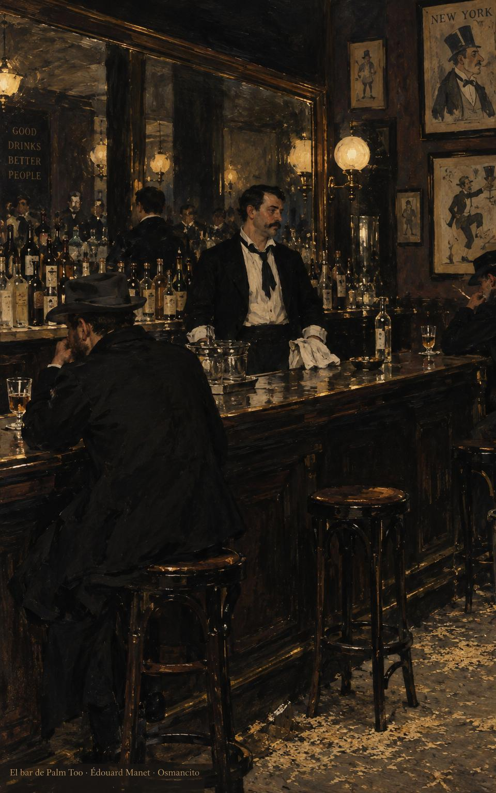
La descripción hace del lector un participante sensorial; destreza que solo enseña la práctica. Ni poca ni demasiada: un término medio. King evita el inventario físico y de vestuario; prefiere que el lector ponga las caras:
If I tell you that Carrie White is a high school outcast with a bad complexion and a fashion-victim wardrobe, I think you can do the rest, can’t you?
Frase 2603
Si te digo que Carrie White es una marginada de instituto con mala piel y un vestuario de víctima de la moda, creo que puedes hacer el resto, ¿no?
No hace falta más:
I don’t need to give you a pimple-by-pimple, skirt-by-skirt rundown.
Frase 2604
No necesito darte un repaso grano por grano, falda por falda.
Todos recordamos a algún perdedor de instituto; describir el suyo congela al tuyo. La descripción empieza en la imaginación del escritor y termina en la del lector. Lugar y textura importan más que el físico:
So spare me, if you please, the hero’s sharply intelligent blue eyes and outthrust determined chin; likewise the heroine’s arrogant cheekbones.
Frase 2609
Así que ahórrame, por favor, los ojos azules agudamente inteligentes del héroe y su decidida mandíbula prominente; igualmente, los pómulos arrogantes de la heroína.
La buena descripción son pocos detalles elegidos que representan todo lo demás; casi siempre son los primeros que vienen a la mente, y si fallan, ahí está la reescritura:
But I think you will find that, in most cases, your first visualized details will be the truest and best.
Frase 2615
Pero creo que descubrirás que, en la mayoría de los casos, tus primeros detalles visualizados serán los más verdaderos y los mejores.
También es fácil pasarse. Palm Too es un restaurante neoyorquino que King frecuenta; antes de escribir, convoca el lugar con todos los sentidos. Los primeros detalles: la penumbra del bar, el brillo del espejo, el serrín del suelo, las caricaturas, el olor a carne y pescado:
This isn’t the Taj Mahal we’re visiting, after all, and I don’t want to sell you the place.
Frase 2626
Al fin y al cabo, no es el Taj Mahal lo que visitamos, y no quiero venderte el lugar.
Además, no se trata del escenario, sino de la historia; siempre de la historia:
It will not behoove me (or you) to wander off into thickets of description just because it would be easy to do.
Frase 2628
No me conviene (ni te conviene) extravarme en matorrales de descripción solo porque sería fácil hacerlo.
El ejemplo: Billy llega en taxi a Palm Too —narración— y luego la descripción: oscuridad de cueva, espejo como espejismo, bebedores solitarios, el maître de corbata floja, serrín, caricaturas, olor a carne y cebolla. Luego vuelven la narración y el diálogo:
I got in almost all of the details which first came to mind when I accessed my memories of the real Palm Too, and I added a few other things, as well—the maître d’ between shifts is pretty good, I think; I love the undone tie and the cuffs rolled up to expose the hairy wrists.
Frase 2650
Metí casi todos los detalles que primero me vinieron a la mente al acceder a mis recuerdos del verdadero Palm Too, y añadí algunas cosas más; el maître entre turnos está muy bien, creo: me encanta la corbata desatada y los puños arremangados que dejan ver las muñecas velludas.
Es como una fotografía. Podría añadir más, pero ¿para qué? El lector quiere saber si Billy encuentra a Richie Martin; más restaurante frenaría el relato. La tinta basta si Palm Too será escenario importante:
If it turns out not to be, I’d do well to revise the descriptive stuff down by a few lines in the next draft.
Frase 2662
Si resulta que no lo es, haría bien en recortar unas líneas de lo descriptivo en el próximo borrador.
Nada de autocomplacencia. El símil, cuando acierta, es como encontrar a un amigo entre desconocidos; cuando falla —«esperando al forense como quien espera un sándwich de pavo»—, King cierra el libro. La trampa más común es el cliché:
He ran like a madman, she was pretty as a summer day, the guy was a hot ticket, Bob fought like a tiger … don’t waste my time (or anyone’s) with such chestnuts.
Frase 2680
Corrió como un loco, era bonita como un día de verano, el tipo era la gran sensación, Bob peleó como un tigre... no me hagas perder el tiempo (ni a nadie) con semejantes castañas.
«Chestnut» («castaña») es en inglés un chiste o una frase demasiado repetida; aquí equivale a lugar común. Esta aclaración viene de fuera del libro.
Los mejores símiles salen de la novela negra: cigarrillos que saben a pañuelo de fontanero, dice Chandler. Ver con claridad y escribir con claridad: imágenes frescas, vocabulario sencillo. La práctica nunca te hará perfecto, y menos mal. Tu trabajo: decir lo que ves y seguir con tu historia.
W7 · El oído afinado
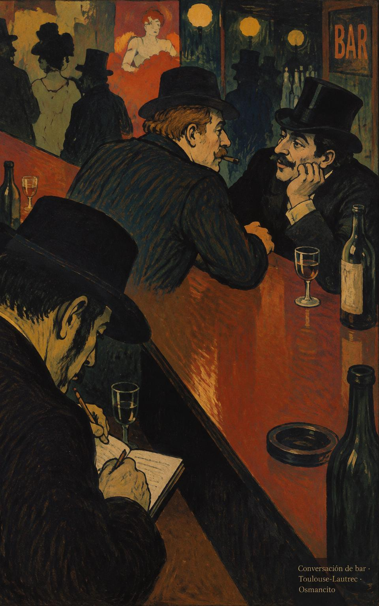
Turno del diálogo, la parte de audio:
It’s dialogue that gives your cast their voices, and is crucial in defining their characters—only what people do tells us more about what they’re like, and talk is sneaky: what people say often conveys their character to others in ways of which they—the speakers—are completely unaware.
Frase 2694
Es el diálogo el que da voz a tu elenco y es crucial para definir sus caracteres; solo lo que la gente hace nos dice más sobre cómo es, y el habla es traicionera: lo que la gente dice a menudo revela su carácter a los demás de maneras de las que ellos —los hablantes— no son conscientes en absoluto.
Se puede informar o se puede mostrar:
You can tell me via straight narration that your main character, Mistuh Butts, never did well in school, never even went much to school, but you can convey the same thing, and much more vividly, by his speech … and one of the cardinal rules of good fiction is never tell us a thing if you can show us, instead:
Frase 2695
Puedes decirme mediante narración directa que tu personaje principal, Mistuh Butts, nunca fue bien en la escuela, que ni siquiera fue mucho a la escuela, pero puedes transmitir lo mismo, y mucho más vívidamente, a través de su habla... y una de las reglas cardinales de la buena ficción es: nunca nos digas una cosa si puedes mostrárnosla:
La muestra: un niño le pregunta a Mistuh Butts si la tierra gira alrededor del sol; él responde que no estudia lo que dice nadie, porque cada quien dice otra cosa hasta que te duele la cabeza y pierdes el «aminite», que resulta ser el apetito:
Well-crafted dialogue will indicate if a character is smart or dumb (Mistuh Butts isn’t necessarily a moron just because he can’t say appetite; we must listen to him awhile longer before making up our minds on that score), honest or dishonest, amusing or an old sobersides.
Frase 2710
El diálogo bien construido indicará si un personaje es listo o tonto (Mistuh Butts no es necesariamente un idiota solo porque no sepa decir appetite; hay que escucharlo un rato más antes de decidir ese punto), honesto o deshonesto, divertido o un viejo aguafiestas.
El buen diálogo es una delicia; el malo, mortal, y no todos nacen con el oído afinado. Lovecraft, genio de lo macabro, escribía diálogos tiesos y sin vida: un granjero moribundo que habla en ráfagas elípticas. Katzenbach, gran narrador con oído de hojalata, pone a un oficial prisionero de guerra a gritar clichés de película bélica: «¡Sálvalo, muchacho! ¡Sobrevive!». En el extremo contrario, Elmore Leonard: dos tipos almorzando en Beverly Hills hablan de una secuela, y su charla es tan real que da el placer culpable de espiar una conversación:
Still, don’t we learn something about Tommy’s character when he assures Chili that Get Leo is not only terrific, but also good?
Frase 2771
Aun así, ¿no aprendemos algo del carácter de Tommy cuando le asegura a Chili que «Get Leo» no solo es fabulosa, sino también buena?
¿Será fiel a la vida o solo a un estereotipo de Hollywood? Da igual: suena verdadero, poesía callejera, y la clave es la honestidad. La honestidad trae críticas: a King le llegan cartas furiosas por las palabrotas de sus personajes. Su madre llamaba a las groserías «el lenguaje de los ignorantes», pero soltaba un «¡oh, mierda!» si se quemaba el asado. La Legión de la Decencia no aprobará ciertas palabras, pero a veces no hay otra: ningún niño avisó jamás a su madre de que su hermanita «defecó» en la bañera:
I suppose he might say pushed or went woowoo, but took a shit is, I fear, very much in the ballpark (little pitchers have big ears, after all).
Frase 2785
Supongo que podría decir «empujó» o «hizo ñaña», pero «cagó» es, me temo, lo que está muy dentro del campo (después de todo, los niños pequeños tienen orejas grandes).
Y la exigencia llega hasta el martillazo en el pulgar:
You must tell the truth if your dialogue is to have the resonance and realism that Hart’s War, good story though it is, so sadly lacks—and that holds true all the way down to what folks say when they hit their thumb with the hammer.
Frase 2786
Debes decir la verdad si quieres que tu diálogo tenga la resonancia y el realismo que «Hart's War», aun siendo buena historia, tan tristemente no tiene; y eso vale hasta para lo que dice la gente cuando se golpea el pulgar con el martillo.
Sustituir «¡oh, mierda!» por «¡oh, cielos!» por miedo a la Legión de la Decencia rompe el contrato no dicho entre escritor y lector: prometer la verdad de cómo actúa y habla la gente. Si un personaje diría «cielos», adelante; la cuestión es dejar hablar a cada cual con libertad:
To do otherwise would be cowardly as well as dishonest, and believe me, writing fiction in America as we enter the twenty-first century is no job for intellectual cowards.
Frase 2791
Hacer otra cosa sería cobardía además de deshonestidad, y créeme: escribir ficción en Estados Unidos al entrar en el siglo veintiuno no es trabajo para cobardes intelectuales.
Los censores quieren que veas el mundo que ellos ven, o que calles. King coincide con su madre: la vulgaridad es lenguaje de ignorantes, casi siempre, aunque hay aforismos profanos llenos de color y pasajes de Richard Dooling donde la vulgaridad se vuelve poesía. Él creció en la clase media baja, y esa gente dice «mierda» más que «cielos»; se consuela con Frank Norris: «Nunca me rendí. Les dije la verdad.» La charla es índice de carácter; la única pregunta es cómo suena en la página. Para que suene verdadera hay que hablar y, más importante, callarse y escuchar.
Los censores quieren que veas el mundo que ellos ven, o que calles. King coincide con su madre: la vulgaridad es lenguaje de ignorantes, casi siempre; hay aforismos profanos llenos de color y pasajes de Richard Dooling donde la vulgaridad se vuelve poesía. Él creció en la clase media baja, y esa gente dice «mierda» más que «cielos»; se consuela con Frank Norris: «Nunca me rendí. Les dije la verdad.» La charla, fea o hermosa, es índice de carácter; la única pregunta es cómo suena en la página. Para que suene verdadera hay que hablar y, más importante, callarse y escuchar.
W8 · Nadie es el malo
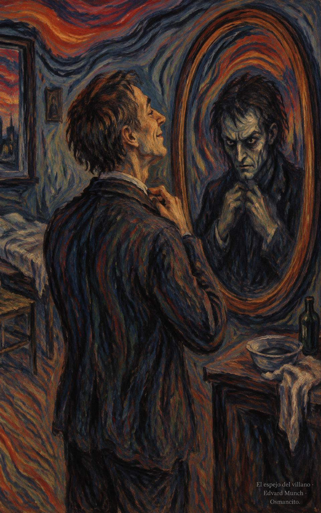
Todo lo dicho del diálogo sirve para construir personajes: observar a la gente real y decir la verdad. King empieza con situaciones y deja que los personajes crezcan hasta mandar; las mejores historias van de la gente, no del suceso. En la vida real nadie es «el malo»: cada uno es el protagonista, y Annie Wilkes se ve cuerda y heroica. King nunca escribe «Annie estaba deprimida»: si tiene que decírtelo, pierde:
If, on the other hand, I can show you a silent, dirty-haired woman who compulsively gobbles cake and candy, then have you draw the conclusion that Annie is in the depressive part of a manic-depressive cycle, I win.
Frase 2848
Si, en cambio, puedo mostrarte a una mujer silenciosa y de pelo sucio que engulle compulsivamente pastel y dulces, y hacer que tú concluyas que Annie está en la parte depresiva de un ciclo maníaco-depresivo, gano.
Y si además:
And if I am able, even briefly, to give you a Wilkes’-eye-view of the world—if I can make you understand her madness—then perhaps I can make her someone you sympathize with or even identify with.
Frase 2849
Y si soy capaz, aunque sea por un instante, de darte una visión del mundo a través de los ojos de Wilkes —si puedo hacerte comprender su locura—, entonces quizá pueda convertirla en alguien con quien simpatices o incluso te identifiques.
El resultado: asusta más, porque es casi real. Todo personaje es en parte su autor, más rasgos observados e imaginación, que le permitió ser una enfermera psicótica un rato. «The Dead Zone» nació de una pregunta: ¿puede un asesino político tener razón y ser el protagonista? Johnny Smith, tipo corriente que ve el futuro, estrecha la mano del candidato Stillson y lo ve presidente, desatando la tercera guerra mundial:
The fact that Johnny does see through him would, I thought, put the reader even more firmly in Johnny’s corner.
Frase 2882
El hecho de que Johnny sí lo vea claro pondría, pensé, al lector aún más firmemente de su lado.
Conocemos al posible asesino llevando a su chica a la feria; cuando ella sugiere acostarse juntos, él prefiere esperar. King caminaba sobre la cuerda floja: sincero y enamorado, pero no mojigato:
I was able to cut his principled behavior a bit by giving him a childish sense of humor; he greets Sarah wearing a glow-in-the-dark Halloween mask (the mask hopefully works in a symbolic way, too; certainly Johnny is perceived as a monster when he points a gun at candidate Stillson).
Frase 2888
Pude cortar un poco su comportamiento tan recto dándole un sentido del humor infantil: recibe a Sarah con una máscara de Halloween que brilla en la oscuridad (la máscara funciona, espero, también de modo simbólico; desde luego, Johnny es percibido como un monstruo cuando apunta con una pistola al candidato Stillson).
«El mismo Johnny de siempre», se ríe Sarah: Johnny ya es nuestro amigo, el tipo que devolvería tu cartera con el dinero. Stillson fue más fácil: vendedor de Biblias, sonríe hasta asegurarse de que no hay nadie; entonces rocía gas al perro y lo mata a patadas. Llovieron cartas por la crueldad animal; King respondía que ni Stillson ni el perro eran reales. Ambos crecieron en escenas alternas hasta el enfrentamiento final:
The characters of my protagonist and antagonist were determined by the story I had to tell—by the fossil, the found object, in other words.
Frase 2905
Los caracteres de mi protagonista y de mi antagonista quedaron determinados por la historia que tenía que contar; por el fósil, el objeto encontrado, en otras palabras.
El trabajo:
My job (and yours, if you decide this is a viable approach to storytelling) is to make sure these fictional folks behave in ways that will both help the story and seem reasonable to us, given what we know about them (and what we know about real life, of course).
Frase 2906
Mi trabajo (y el tuyo, si decides que este es un enfoque viable para contar historias) es asegurarme de que esta gente ficticia se comporte de maneras que ayuden a la historia y a la vez nos parezcan razonables, dado lo que sabemos de ellos (y lo que sabemos de la vida real, por supuesto).
En Getsemaní, según los Evangelios, Jesús oró pidiendo que se apartara de él el cáliz antes de ser arrestado. Esta aclaración viene de fuera del libro.
Los villanos dudan y sienten lástima; el bueno intenta rehuir lo correcto, como Johnny, como Jesús en Getsemaní. Si haces tu trabajo, los personajes cobran vida y actúan por su cuenta. Suena inquietante si no lo has vivido, pero es divertidísimo y resuelve muchos problemas.
W9 · Todo sobre la mesa
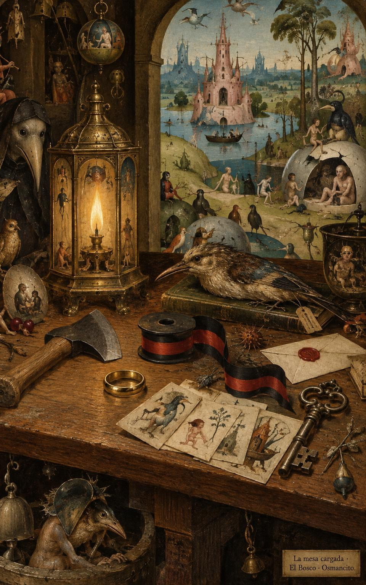
Cubiertas las bases —práctica y honestidad—, quedan los adornos: onomatopeya, corriente de conciencia, tema, ritmo. Todo está sobre la mesa: usa lo que la mejore sin estorbar el relato; si suena mal, ahí está la tecla de borrar. Ni conservadurismo ni experimentalismo obligado; escribe boca abajo si quieres. Pero llega el momento de juzgar lo escrito:
I don’t believe a story or a novel should be allowed outside the door of your study or writing room unless you feel confident that it’s reasonably reader-friendly.
Frase 2924
No creo que a un relato o una novela se les deba dejar salir por la puerta de tu estudio o cuarto de escritura a menos que confíes en que es razonablemente amable con el lector.
No puedes agradar a todos los lectores todo el tiempo, sostiene, citando a Shakespeare. Y dicho eso:
And now that I’ve waved that caution flag, duly satisfying all OSHA, MENSA, NASA, and Writers’ Guild guidelines, let me reiterate that it’s all on the table, all up for grabs.
Frase 2927
Y ahora que he ondeado esa bandera de precaución, cumpliendo debidamente todas las normas de OSHA, MENSA, NASA y el Gremio de Escritores, permíteme reiterar que todo está sobre la mesa, todo al alcance.
OSHA, MENSA y NASA son una agencia de seguridad laboral, un club de alto coeficiente intelectual y la agencia espacial de Estados Unidos; el Gremio de Escritores es el sindicato del oficio. Esta aclaración viene de fuera del libro.
Prueba lo que quieras; si funciona, se queda; si no, se tira, aunque lo ames: «Asesina a tus queridos», dijo Arthur Quiller-Couch. Los toques de gracia llegan al final; en «The Green Mile», el inocente condenado se llamó John Coffey por las iniciales de Jesucristo. Terminada la historia, King relee buscando patrones para el segundo borrador: ahí entran símbolo y tema:
If you can go along with the concept of the story as a pre-existing thing, a fossil in the ground, then symbolism must also be pre-existing, right?
Frase 2949
Si aceptas el concepto de la historia como algo preexistente, un fósil enterrado, entonces el simbolismo también debe ser preexistente, ¿no?
Un hueso más, si está; si no, da igual: te queda la historia. Si está y lo notas:
If it is there and if you notice it, I think you should bring it out as well as you can, polishing it until it shines and then cutting it the way a jeweler would cut a precious or semiprecious stone.
Frase 2954
Si está ahí y si lo notas, creo que debes sacarlo lo mejor que puedas, pulirlo hasta que brille y luego tallarlo como un joyero talla una piedra preciosa o semipreciosa.
Al releer el borrador de «Carrie» —una chica telequinética vengándose de una broma cruel—, King notó sangre en los tres puntos cruciales —la primera regla, la sangre de cerdo del baile, la regla de Sue—, y parecía significar algo: sacrificio, madurez, pecado y salvación. Esa capacidad de resumir hace al símbolo útil. Pero:
Does that make it necessary to the success of your story or novel?
Frase 2979
¿Lo vuelve eso necesario para el éxito de tu relato o tu novela?
En absoluto: adorna y enriquece, no crea profundidad artificial; solo la historia trata de la historia. Sirve como dispositivo de enfoque:
I think that, when you read your manuscript over (and when you talk it over), you’ll see if symbolism, or the potential for it, exists.
Frase 2988
Creo que, cuando relees tu manuscrito (y cuando lo comentas), verás si el simbolismo, o su potencial, existe.
Si no existe, déjalo en paz. Si es parte del fósil, ve a por él. Si no, eres un mono.
W10 · De qué trata
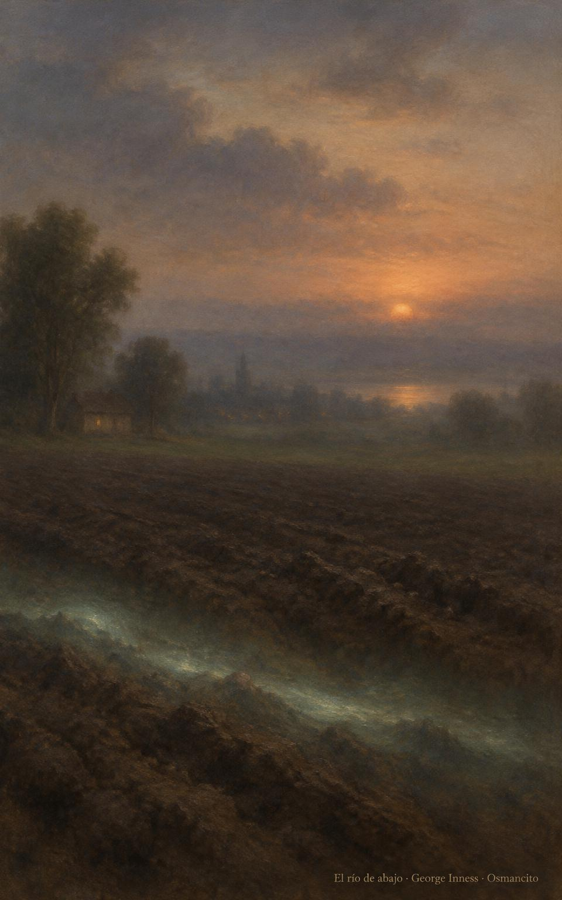
El tema, como el símbolo, no es para tanto: todo libro que valga la pena trata de algo, y el segundo borrador debe aclarar ese algo. «The Stand» fue la que más le costó: epopeya de muchos personajes y un virus que arrasa el mundo, escrita con entusiasmo... hasta atascarse a la mitad. Quinientas páginas eran demasiada inversión para abandonar. Caminatas largas, aburrimiento, semanas dando vueltas a las tramas enredadas; y un día, sin pensar en nada, la respuesta llegó entera, en un destello: el mundo de su historia estaba superpoblado, y la solución era parecida al virus —una explosión—, un tajo al nudo gordiano; los supervivientes saldrían a Las Vegas en busca de redención. Es su momento favorito, ese destello en que todo conecta:
Whatever you call it, I wrote my page or two of notes in a frenzy of excitement and spent the next two or three days turning my solution over in my mind, looking for flaws and holes (also working out the actual narrative flow, which involved two supporting characters placing a bomb in a major character’s closet), but that was mostly out of a sense of this-is-too-good-to-be-true unbelief.
Frase 3045
Llámalo como quieras: escribí mis una o dos páginas de notas en un frenesí de emoción y pasé los dos o tres días siguientes dándole vueltas a mi solución, buscando fallos y agujeros (resolviendo también el flujo narrativo, que implicaba que dos personajes secundarios colocaban una bomba en el armario de un personaje principal), pero era sobre todo por la incredulidad de esto-es-demasiado-bueno-para-ser-verdad.
La bomba en el armario resolvió todo; el resto del libro corrió en nueve semanas. Terminado el borrador, entendió el freno: los buenos reconstruían la misma trampa tecnológica y se parecían demasiado a los malos; adoraban un becerro de oro electrónico. La violencia como solución recorre la naturaleza humana como un hilo rojo condenatorio: ese se volvió el tema de «The Stand», y la segunda versión se escribió con él fijo en la mente. Al final, Fran pregunta a Stu si hay esperanza; King buscó una frase aclaratoria, porque Stu hablaba por él, pero Stu repite: «No lo sé.» Era lo mejor que podía hacer:
Sometimes the book gives you answers, but not always, and I didn’t want to leave the readers who had followed me through hundreds of pages with nothing but some empty platitude I didn’t believe myself.
Frase 3075
A veces el libro te da respuestas, pero no siempre, y yo no quería dejar a los lectores que me habían seguido durante cientos de páginas con nada más que una frase hecha y vacía que yo mismo no creía.
«The Stand» no tiene moraleja; si el tema es claro, los lectores sacarán sus conclusiones, y esos debates son placer lector:
Although I’d used symbolism, imagery, and literary homage before getting to my novel about the big plague (without Dracula, for instance, I think there is no ’Salem’s Lot), I’m quite sure that I never thought much about theme before getting roadblocked on The Stand.
Frase 3078
Aunque había usado simbolismo, imágenes y homenaje literario antes de llegar a mi novela sobre la gran plaga (sin «Drácula», por ejemplo, creo que no existe «'Salem's Lot»), estoy seguro de que nunca pensé mucho en el tema antes de quedar atascado en «The Stand».
Parecían cosas de Mentes Mayores:
I’m not sure I would have gotten to it as soon as I did, had I not been desperate to save my story.
Frase 3080
No estoy seguro de que hubiera llegado a él tan pronto de no haber estado desesperado por salvar mi historia.
El pensamiento temático resultó útil de verdad: otro artilugio de la caja de herramientas. Desde entonces se pregunta sobre qué escribe y por qué. Ningún novelista tiene demasiados temas; los suyos, pocos y hondos:
These deep interests (I won’t quite call them obsessions) include how difficult it is—perhaps impossible!—to close Pandora’s technobox once it’s open (The Stand, The Tommy-knockers, Firestarter); the question of why, if there is a God, such terrible things happen (The Stand, Desperation, The Green Mile); the thin line between reality and fantasy (The Dark Half, Bag of Bones, The Drawing of the Three); and most of all, the terrible attraction violence sometimes has for fundamentally good people (The Shining, The Dark Half).
Frase 3086
Estos intereses hondos (no los llamaré obsesiones) incluyen lo difícil que es —¡quizá imposible!— cerrar la tecnocaja de Pandora una vez abierta («The Stand», «The Tommyknockers», «Firestarter»); la pregunta de por qué, si hay un Dios, suceden cosas tan terribles («The Stand», «Desperation», «The Green Mile»); la delgada línea entre realidad y fantasía («The Dark Half», «Bag of Bones», «The Drawing of the Three»); y sobre todo, la atracción terrible que la violencia ejerce a veces sobre personas fundamentalmente buenas («The Shining», «The Dark Half»).
También las diferencias entre niños y adultos y el poder sanador de la imaginación. No es gran cosa: intereses nacidos de su vida, preguntas que lo ocupan al apagar la luz. Tú tienes los tuyos:
Some are likely similar to those I’ve mentioned above and some are likely very different, but you have them, and you should use them in your work.
Frase 3092
Algunos serán probablemente parecidos a los que he mencionado y otros muy distintos, pero los tienes, y debes usarlos en tu trabajo.
El nudo gordiano alude al nudo que, según la leyenda, Alejandro Magno cortó de un espadazo; aquí, resolver un lío de golpe. El becerro de oro es el ídolo que adoraron los israelitas en el Éxodo. La caja de Pandora, en el mito griego, liberó todos los males al abrirse. Estas aclaraciones vienen de fuera del libro.
Para eso sirven, en parte. Un aviso final: empezar por el tema es receta de mala ficción; la buena ficción empieza con la historia y progresa hacia el tema, casi nunca al revés. Pero con la historia ya en el papel, piensa en lo que significa y enriquece los borradores siguientes con tus conclusiones; hacer menos es robarle a tu obra —y a tus lectores— la visión que hace único a cada relato.
W11 · Puerta cerrada, puerta abierta
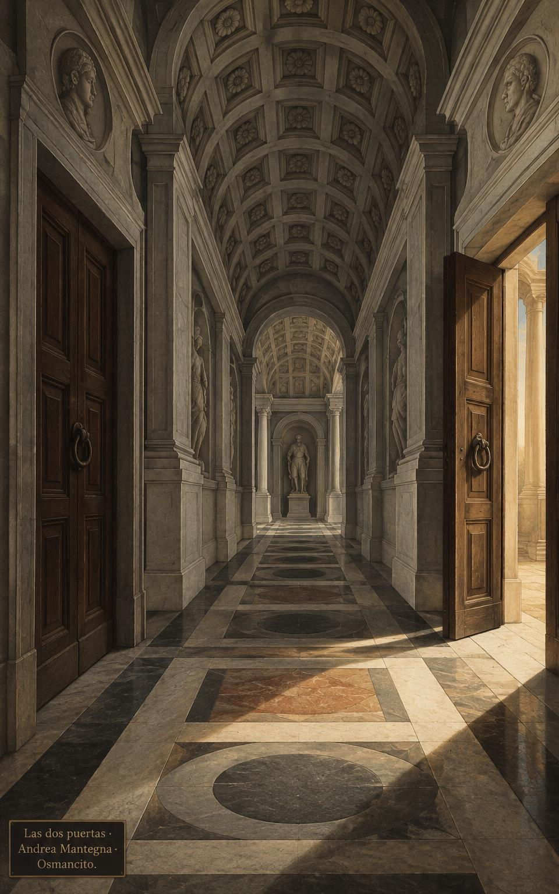
¿Cuántos borradores? Para King, dos y un repaso:
You should realize that I’m only talking about my own personal mode of writing here; in actual practice, rewriting varies greatly from writer to writer.
Frase 3102
Ten en cuenta que aquí solo hablo de mi modo personal de escribir; en la práctica real, la reescritura varía muchísimo de escritor a escritor.
Vonnegut reescribía cada página hasta dejarla perfecta: poco papel al día, pero el manuscrito terminado era el libro terminado. Algunas cosas valen para casi todos; el veterano ya tiene su rutina. Al principiante:
If you’re a beginner, though, let me urge that you take your story through at least two drafts; the one you do with the study door closed and the one you do with it open.
Frase 3108
Si eres principiante, sin embargo, permíteme insistir en que lleves tu relato por al menos dos borradores: el que haces con la puerta del estudio cerrada y el que haces con ella abierta.
Con la puerta cerrada, King escribe tan rápido como puede; la velocidad mantiene el entusiasmo y adelanta a la duda. Quizá tengas ganas de enseñarlo a alguien cercano —a menudo, quien comparte tu cama—, por orgullo o por duda:
My best advice is to resist this impulse.
Frase 3115
Mi mejor consejo es resistir ese impulso.
Mantén la presión: no expongas tu texto a la duda, el elogio o las preguntas del Mundo Exterior:
There’ll be time to show off what you’ve done when you finish … but even after finishing I think you must be cautious and give yourself a chance to think while the story is still like a field of freshly fallen snow, absent of any tracks save your own.
Frase 3118
Habrá tiempo de presumir de lo hecho cuando termines... pero incluso después de terminar creo que debes ser prudente y darte la oportunidad de pensar mientras la historia es aún como un campo de nieve recién caída, sin más huellas que las tuyas.
Con la puerta cerrada te concentras en la historia y nada más. Terminado el borrador, celébralo; si alguien espera para leerlo, entrégaselo con una condición: silencio hasta que tú estés listo. Mente e imaginación necesitan reciclarse:
My advice is that you take a couple of days off—go fishing, go kayaking, do a jigsaw puzzle—and then go to work on something else.
Frase 3134
Mi consejo es que te tomes un par de días libres —ve a pescar, ve en kayak, haz un rompecabezas— y luego te pongas a trabajar en otra cosa.
Mejor algo corto; entre borradores de novelas largas King escribió «The Body» y «Apt Pupil». ¿Cuánto dejar reposar el libro, como masa de pan entre amasados?
How long you let your book rest—sort of like bread dough between kneadings—is entirely up to you, but I think it should be a minimum of six weeks.
Frase 3137
Cuánto dejes reposar tu libro —algo así como la masa de pan entre amasados— depende por completo de ti, pero creo que debería ser un mínimo de seis semanas.
Seis semanas en el cajón, sin releer; cuando el manuscrito parezca una reliquia de mercadillo, estás listo. Léelo de una sentada, lápiz en mano; será tuyo y a la vez de otro, y así es más fácil matar a los queridos. Verás agujeros de trama por donde cabe un camión; no te machaques: alguien diseñó el Titanic y lo llamó insumergible. Hazte las preguntas grandes: ¿es coherente?, ¿qué entrelaza un tema? Busca resonancia, sin dar papilla. Después abre la puerta: toda novela es una carta dirigida a una persona. La primera lectora de King es su esposa Tabitha, cariñosa pero implacable, como Alma Reville con Hitchcock: en el pase de «Psycho» sentenció: «No puedes estrenarla así; Janet Leigh traga cuando se supone que está muerta.» Otros cuatro u ocho lectores de confianza completan el círculo:
Besides, if you really did write a stinker—it happens; as the author of Maximum Overdrive I’m qualified to say so—wouldn’t you rather hear the news from a friend while the entire edition consists of a half-dozen Xerox copies?
Frase 3218
Además, si de verdad escribiste un pestiño —sucede; como autor de «Maximum Overdrive» estoy cualificado para decirlo—, ¿no preferirías oír la noticia de un amigo mientras la edición entera consiste en media docena de fotocopias?
Vuelven seis u ocho opiniones subjetivas. Si unos aman al personaje A y otros al B, es empate, y el empate es del escritor. Algunos lectores se especializan en errores de hecho, los más fáciles: Mac McCutcheon corregía calibres de armas; su mejor hallazgo: en «'Salem's Lot», los lugareños cazaban tantos «peasants» («campesinos») como sus familias comerían; quiso decir «pheasants», faisanes, y Mac le ahorró la vergüenza:
Subjective evaluations are, as I say, a little harder to deal with, but listen: if everyone who reads your book says you have a problem (Connie comes back to her husband too easily, Hal’s cheating on the big exam seems unrealistic given what we know about him, the novel’s conclusion seems abrupt and arbitrary), you’ve got a problem and you better do something about it.
Frase 3237
Las evaluaciones subjetivas son, como digo, un poco más difíciles de manejar, pero escucha: si todos los que leen tu libro dicen que tienes un problema (Connie vuelve con su esposo con demasiada facilidad, la trampa de Hal en el gran examen parece poco realista dado lo que sabemos de él, la conclusión de la novela parece abrupta y arbitraria), tienes un problema y más te vale hacer algo al respecto.
Muchos se resisten: revisar según los gustos del público les parece prostitución:
If you really feel that way, I won’t try to change your mind.
Frase 3240
Si de verdad te sientes así, no intentaré cambiar tu opinión.
Y añade, con sorna:
In fact (he said snottily), if you really feel that way, why bother to publish at all?
Frase 3242
De hecho (dijo con sorna), si de verdad te sientes así, ¿para qué molestarte en publicar?
King entiende el resentimiento: en el cine, los pases de prueba vuelven locos a los directores, obligados a remontar al gusto de un público de centro comercial; y funcionan. Salinger, se dice, guardaba sus libros en una caja de seguridad:
I’d hate to see novels revised on the basis of test audiences—a lot of good books would never see the light of day if it was done that way—but come on, we’re talking about half a dozen people you know and respect.
Frase 3251
Odiaría ver novelas revisadas sobre la base de públicos de prueba —muchos buenos libros nunca verían la luz si se hiciera así—, pero vamos, estamos hablando de media docena de personas que conoces y respetas.
Si preguntas a los adecuados, te dirán mucho. No todas las opiniones pesan igual: King escucha sobre todo a Tabby, para quien escribe:
If you’re writing primarily for one person besides yourself, I’d advise you to pay very close attention to that person’s opinion (I know one fellow who says he writes mostly for someone who’s been dead fifteen years, but the majority of us aren’t in that position).
Frase 3256
Si escribes principalmente para una persona además de para ti, te aconsejo prestar muchísima atención a la opinión de esa persona (conozco a alguien que dice escribir sobre todo para una persona muerta hace quince años, pero la mayoría no estamos en esa posición).
J. D. Salinger fue un novelista estadounidense, autor de «El guardián entre el centeno», célebre por su reclusión. Alfred Hitchcock fue un director de cine británico, maestro del suspense, y «Psycho» es una de sus películas. Estas aclaraciones vienen de fuera del libro.
Si lo que oyes tiene sentido, haz los cambios. Llama Lector Ideal a esa persona: estará en tu cuarto siempre, en espíritu con la puerta cerrada y en carne al abrirla, y te ayuda a leer tu obra como el público. Al escribir una escena graciosa, King imagina a Tabby riéndose; al corregir, la pregunta —¿ya es bastante graciosa?— está delante. En un viaje en coche espiaba su lectura hasta que ella estalló: «¡Mira la carretera y deja de ser tan necesitado!» Cinco minutos después, un resoplido de risa. Le bastó: la mayoría de los escritores son necesitados, sobre todo cuando la puerta se abre y entra la luz del mundo.
W12 · Menos el diez por ciento
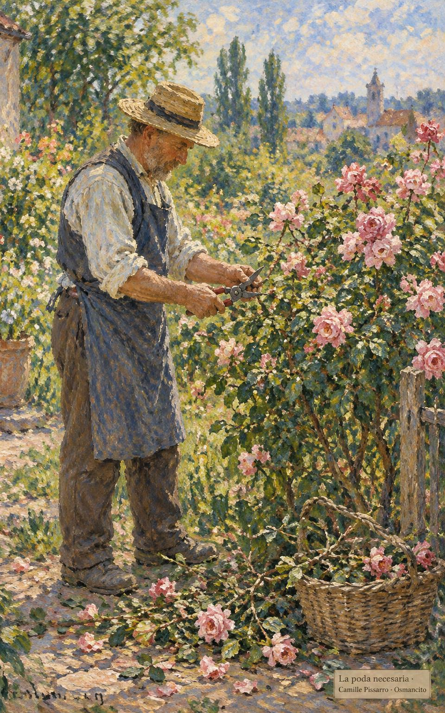
Quedan el ritmo y la historia previa:
Ideal Reader is also the best way for you to gauge whether or not your story is paced correctly and if you’ve handled the back story in satisfactory fashion.
Frase 3284
El Lector Ideal es también la mejor manera de calibrar si tu historia tiene el ritmo correcto y si has manejado la historia previa de forma satisfactoria.
El ritmo es la velocidad a la que se despliega la narración. En los círculos editoriales se cree, sin examinarlo, que las más vendidas son las rápidas:
I guess the underlying thought is that people have so many things to do today, and are so easily distracted from the printed word, that you’ll lose them unless you become a kind of short-order cook, serving up sizzling burgers, fries, and eggs over easy just as fast as you can.
Frase 3287
Supongo que la idea de fondo es que la gente tiene hoy tantas cosas que hacer, y se distrae tan fácilmente de la palabra impresa, que la perderás a menos que te conviertas en una especie de cocinero de comida rápida, sirviendo hamburguesas chisporroteantes, papas fritas y huevos fritos tan rápido como puedas.
Pamplinas: cuando «El nombre de la rosa» triunfa, los editores se asombran. Demasiada velocidad deja atrás al lector; King prefiere el paso del transatlántico: cada historia tiene su ritmo. El término medio lo da el Lector Ideal: observa en qué escena deja el manuscrito. Elmore Leonard lo resumió: quitar las partes aburridas. De adolescente, una nota de rechazo le cambió la corrección: «No está mal, pero HINCHADO. Fórmula: segundo borrador = primer borrador menos el diez por ciento.» Desde entonces recorta ese diez por ciento: toda historia es plegable; el efecto es viagra literario. La historia previa define al personaje; métela pronto y con gracia: nada de «Hola, exesposa», mejor los dedos que buscan el sitio del anillo. Y nada de «in medias res»: prefiere la casilla de salida:
I’m an A-to-Z man; serve me the appetizer first and give me dessert if I eat my veggies.
Frase 3356
Soy un hombre de la A a la Z: sírveme primero el aperitivo y dame el postre si me como las verduras.
Aun contándolo así, algo de historia previa es inescapable; en un sentido muy real, toda vida es «in medias res»:
If you introduce a forty-year-old man as your main character on page one of your novel, and if the action begins as the result of some brand-new person or situation’s exploding onto the stage of this fellow’s life—a road accident, let’s say, or doing a favor for a beautiful woman who keeps looking sexily back over her shoulder (did you note the awful adverb in this sentence which I could not bring myself to kill?)—you’ll still have to deal with the first forty years of the guy’s life at some point.
Frase 3359
Si presentas a un hombre de cuarenta años como tu personaje principal en la página uno de tu novela, y si la acción empieza como resultado de que una persona o situación completamente nueva irrumpe en el escenario de la vida de este tipo —un accidente de tráfico, digamos, o hacer un favor a una mujer hermosa que no deja de mirar seductoramente por encima del hombro (¿notaste el horrible adverbio de esta frase que no me resigné a matar?)—, aun así tendrás que ocuparte en algún momento de los primeros cuarenta años de la vida del tipo.
Cómo manejes esos años decidirá si el relato es «buena lectura» o «un gran rollo». J. K. Rowling es la campeona del repaso elegante. Y el Lector Ideal ayuda: escucha lo que no entendió; si tú sí lo entiendes pero no lo pusiste en la página, acláralo:
If you don’t—if the parts of the back story your Ideal Reader queried are hazy to you, as well—then you need to think a lot more carefully about the past events that cast a light on your characters’ present behavior.
Frase 3367
Si no lo entiendes —si las partes de la historia previa que tu Lector Ideal cuestionó también te resultan confusas a ti—, entonces debes pensar con mucho más cuidado en los sucesos pasados que arrojan luz sobre el comportamiento presente de tus personajes.
«In medias res» es una expresión latina que significa «en medio de las cosas»: empezar el relato a mitad de la acción. Esta aclaración viene de fuera del libro.
Presta atención también a lo que aburra al Lector Ideal. En «Bag of Bones», Tabby leyó con gusto el pasado de Mike Noonan, salvo sus obras de caridad del año del bloqueo: «¿A quién le importa?». King se defendió, pero ella tenía razón: recortó dos páginas a dos párrafos y nadie las echó de menos. Moraleja: todo el mundo tiene una historia y casi toda es poco interesante; quédate con las partes que sí lo son. Las biografías largas solo se oyen en los bares, una hora antes del cierre, y si pagas tú.
W13 · Un toque de verosimilitud
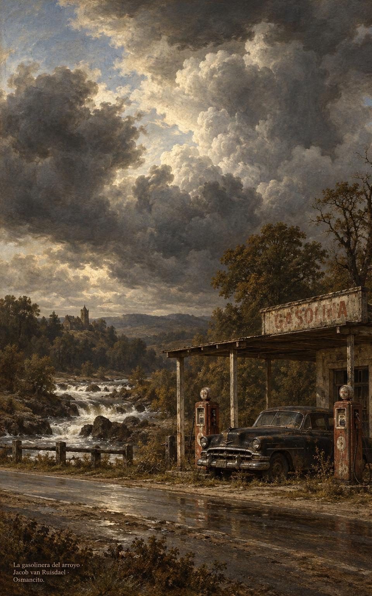
Falta la investigación, una historia previa especializada; debe ir atrás, lo más atrás posible. ¿Excepciones?
There have been very successful writers—Arthur Hailey and James Michener are the first ones that come to my mind—whose novels rely heavily on fact and research.
Frase 3397
Ha habido escritores muy exitosos —Arthur Hailey y James Michener son los primeros que me vienen a la mente— cuyas novelas dependen mucho del dato y la investigación.
Hailey escribe manuales apenas disfrazados; Michener, lecciones de geografía. Por cada uno que triunfa así, hay mil aspirantes:
On the whole, I think story belongs in front, but some research is inevitable; you shirk it at your peril.
Frase 3402
En general, creo que la historia va delante, pero algo de investigación es inevitable; la eludes bajo tu propio riesgo.
Prueba: en 1999, King paró a echar gasolina en una estación antigua; junto a un arroyo resbaló en la nieve. Si hubiera caído al agua, ¿cuánto tardaría el empleado en avisar a la Policía Estatal?
By the time I got back on the turnpike again, I had two things: a wet ass from my fall behind the Mobil station, and a great idea for a story.
Frase 3412
Cuando volví a la autopista, tenía dos cosas: el culo mojado por mi caída detrás de la estación Mobil y una gran idea para un relato.
De ahí salió «From a Buick Eight»: un hombre de negro —quizá no humano— abandona un falso Buick ante una gasolinera rural. King no sabía nada de la Policía Estatal: con la puerta cerrada se lo inventó todo; el borrador espera en el cajón:
Work on it has been delayed by circumstances beyond my control, but eventually I hope and expect to spend a couple of weeks in western Pennsylvania, where I’ve been given conditional permission to do some ridealongs with the State Police (the condition—which seems eminently reasonable to me—was that I not make them look like meanies, maniacs, or idiots).
Frase 3424
El trabajo se ha retrasado por circunstancias fuera de mi control, pero con el tiempo espero pasar un par de semanas en el oeste de Pensilvania, donde me han dado permiso condicional para acompañar a la Policía Estatal en sus patrullas (la condición —que me parece eminentemente razonable— es que no los haga quedar como malvados, maníacos o idiotas).
Así corregirá errores y añadirá detalles, pocos: la palabra clave de la historia previa es «previa». Su relato va de monstruos y secretos; busca un toque de verosimilitud:
That sense of reality is important in any work of fiction, but I think it is particularly important in a story dealing with the abnormal or paranormal.
Frase 3430
Esa sensación de realidad es importante en cualquier obra de ficción, pero creo que es particularmente importante en un relato que trata de lo anormal o lo paranormal.
Los detalles correctos frenan cartas de quisquillosos. La investigación es inevitable al salirte de «escribe lo que sabes»; solo que la cola no mueva al perro: escribes una novela, no un trabajo de investigación. La historia siempre va primero.
W14 · Seminarios entre ostras
¿Sirven los talleres de escritura? Le preguntan a menudo:
I’m often asked if I think the beginning writer of fiction can benefit from writing classes or seminars.
Frase 3436
A menudo me preguntan si creo que el escritor de ficción principiante puede beneficiarse de los cursos o seminarios de escritura.
Quien pregunta suele buscar una fórmula mágica. King lo duda, sin oponerse del todo. En «East Is East», de T. Coraghessan Boyle, una colonia de escritores le pareció de cuento: cabañas propias, el almuerzo en la puerta con la discreción del hada de los dientes, relatos junto al fuego entre malvaviscos. Él escribe entre el inodoro tapado y el dentista, y las interrupciones no dañan: la arena en la ostra hace la perla, no los seminarios entre ostras. El problema: el «quiero» se vuelve «tengo que», y las críticas son vagas —«me encantó la sensación del relato de Peter»—, puro viento sin dato útil, con la puerta siempre abierta:
The pressure to explain is always on, and a lot of your creative energy, it seems to me, is therefore going in the wrong direction.
Frase 3472
La presión de explicar está siempre presente, y mucha de tu energía creativa, me parece, va por tanto en la dirección equivocada.
En vez de cuestionar tu prosa, escribe tan rápido como corre el hombre de jengibre, con el fósil aún claro. King confiesa un prejuicio: su gran bloqueo llegó el año que cursó dos asignaturas de escritura; fueron cuatro meses de cerveza y telenovelas. Los talleres sí tienen un beneficio: allí el deseo de escribir se toma en serio, aunque nadie debería necesitar permiso. Otro argumento es el profesorado:
There are thousands of talented writers at work in America, and only a few of them (I think the number might be as low as five percent) can support their families and themselves with their work.
Frase 3491
Hay miles de escritores talentosos trabajando en Estados Unidos, y solo unos pocos (creo que quizá el cinco por ciento) pueden mantener a sus familias y a sí mismos con su obra.
Los subsidios, ni pensarlo; Estados Unidos prefiere los concursos de televisión a los cuentos de Raymond Carver. Para muchos, la solución es enseñar; a veces salen contactos: el primer agente de King llegó por su profesor:
After reading a couple of my stories in Eh-77 (a comp class emphasizing fiction), Professor Holmes asked Crain if he would look at a selection of my work.
Frase 3505
Tras leer un par de mis relatos en Eh-77 (un curso de redacción centrado en ficción), el profesor Holmes le pidió a Crain que echara un vistazo a una selección de mi obra.
Crain murió poco después; King espera que no lo mataran sus relatos. No necesitas talleres, como no necesitas este libro: Faulkner aprendió en correos, otros en la Armada o la cárcel, y King lavando sábanas. Se aprende leyendo y escribiendo mucho, con la puerta cerrada. Aun así, quizá acabes en esa colonia del bosque:
Still, I suppose you might end up in a version of that sylvan writer’s colony in East Is East: your own little cottage in the pines, complete with word processor, fresh disks (what is so delicately exciting to the imagination as a box of fresh computer disks or a ream of blank paper?), the cot in the other room for that afternoon nap, and the lady who tiptoes to your stoop, leaves your lunch, and then tiptoes away again.
Frase 3515
Aun así, supongo que podrías acabar en una versión de aquella silvestre colonia de escritores de «East Is East»: tu propia cabañita entre los pinos, con procesador de textos, discos nuevos (¿qué estimula tan delicadamente la imaginación como una caja de discos nuevos o una resma de papel en blanco?), el catre en la otra habitación para la siesta, y la señora que llega de puntillas a tu puerta, deja tu almuerzo y se retira de puntillas.
«El hombre de jengibre» es un personaje de cuento infantil: una galleta recién horneada que huye corriendo de todos. Esta aclaración viene de fuera del libro.
¿Y si surge la oportunidad?
If you got a chance to participate in a deal like that, I’d say go right ahead.
Frase 3517
Si tuvieras la oportunidad de participar en un trato así, yo diría que adelante.
No aprenderás secretos mágicos —no existen—, pero será un gran rato, y King está a favor de los grandes ratos.
W15 · Las tres caras de Frank
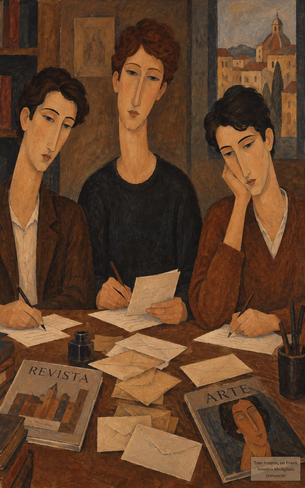
¿Cómo conseguir un agente? La sospecha común es que la industria editorial es una familia cerrada: falso; agentes y editores buscan al próximo autor que venda mucho, joven o no. Hay que empezar como propio representante: leer las revistas que publican lo tuyo y el «Writer's Market»; enviar sin leer el mercado es jugar a los dardos a oscuras. Y aquí entra Frank, un aspirante:
Frank is actually a composite of three young writers I know, two men and one woman.
Frase 3552
Frank es en realidad una combinación de tres jóvenes escritores que conozco, dos hombres y una mujer.
Los tres han tenido algo de éxito a los veintitantos; ninguno conduce un Rolls-Royce, y los tres probablemente abrirán brecha:
The three faces of Frank all have different interests and write in different styles and voices, but their approaches to the hurdles between them and becoming published writers are similar enough for me to feel comfortable about putting them together.
Frase 3555
Las tres caras de Frank tienen intereses distintos y escriben en estilos y voces distintos, pero sus maneras de sortear los obstáculos entre ellos y convertirse en escritores publicados son lo bastante parecidas como para que me sienta cómodo uniéndolos.
Y añade, mirando de frente al lector:
I also feel that other beginning writers—you, for instance, dear Reader—could do worse than follow in Frank’s footsteps.
Frase 3556
También creo que otros escritores principiantes —tú, por ejemplo, querido lector— no harían mal en seguir los pasos de Frank.
¿Quién es Frank? El propio King lo cuenta:
Frank was an English major (you don’t have to be an English major to become a writer, but it sure doesn’t hurt) who began submitting his stories to magazines as a college student.
Frase 3557
Frank se especializó en Literatura Inglesa (no hace falta especializarse en Literatura Inglesa para llegar a escritor, pero desde luego no perjudica) y empezó a enviar sus relatos a revistas cuando era estudiante universitario.
Cursó talleres y leyó cada relato de cada revista antes de enviar los suyos. No publicó en mercados grandes, pero recibió notas de rechazo personales. Un año después de graduarse llegó la primera aceptación: una revista pequeña le compró un relato por veinticinco dólares y doce ejemplares. Delirio total:
Twenty-five bucks won’t pay the rent, won’t even buy a week’s worth of groceries for Frank and his wife, but it’s a validation of his ambition, and that— any newly published writer would agree, I think—is priceless: Someone wants something I did!
Frase 3573
Veinticinco dólares no pagan el alquiler, ni siquiera la compra de una semana para Frank y su esposa, pero es una validación de su ambición, y eso —cualquier escritor recién publicado estaría de acuerdo, creo— no tiene precio: ¡alguien quiere algo que hice!
Es un crédito: la bola de nieve empieza a rodar. Vende otro relato a una revista que muere antes de publicarlo; lo devuelve a la circulación con registros cuidadosos, y el amigo del editor difunto lo publica en su nueva revista: la vieja red de contactos triunfa. Frank enseña inglés, escribe reseñas y piensa en una novela. Lo más importante para quien empieza, dice, es la buena presentación: carta breve, buen papel, a doble espacio, dirección y número de palabras aproximado:
Frank pauses, laughs, and says: “Don’t cheat, either.
Frase 3619
Frank hace una pausa, ríe y dice: «Y no hagas trampa, tampoco.
Los editores calculan la longitud con hojear las páginas. La respuesta sorprende a King; esperaba algo menos de tuercas y tornillos:
I’m still a bit surprised at Frank’s answer; I expected something that was a little less nuts-and-bolts.
Frase 3621
Todavía me sorprende un poco la respuesta de Frank; esperaba algo un poco menos de tuercas y tornillos.
«Nada —responde—: te vuelves práctico enseguida; nadie te escucha si no entras con pinta de profesional.» Han pasado casi cuarenta años desde que King clavaba sus rechazos en un pincho:
“You can’t make them like your story,” Frank finishes, “but you can at least make it easy for them to try to like it.”
Frase 3627
«No puedes hacer que les guste tu relato —termina Frank—, pero al menos puedes facilitarles que intenten que les guste.»
La historia de Frank sigue en marcha, y su futuro pinta bien:
He has published a total of six shorts now, and won a fairly prestigious prize for one of them—we’ll call it the Minnesota Young Writers’ Award, although no part of my Frank composite actually lives in Minnesota.
Frase 3629
Ya ha publicado seis relatos y ganó un premio bastante prestigioso por uno de ellos —llamémoslo el Premio de Jóvenes Escritores de Minnesota, aunque ninguna parte de mi Frank combinado vive realmente en Minnesota.
Empezó su novela, y un agente joven y reputado aceptó representarla. Se puso serio con el agente al ponerse serio con la novela:
“I didn’t want to put in all that work and then be faced with not knowing how to sell the damn thing when I was done,” he told me.
Frase 3633
«No quería hacer todo ese trabajo y luego encontrarme sin saber cómo vender la maldita cosa cuando terminara», me dijo.
Escribió doce cartas idénticas: joven escritor busca agente; lista de relatos publicados con sus precios; orgullo del premio; novela en marcha; gracias por leer. La respuesta fue grande: una llamada, tres pidieron el relato premiado, seis las primeras páginas de la novela; solo uno no mostró interés, y eso sin un solo contacto personal. «Esperaba aceptar a quien me quisiera —dice—; en cambio, pude elegir.» Su cosecha: la carta bien escrita, la lista de publicaciones, el premio. Y fue inteligente en otro punto:
Frank was also intelligent enough to ask Richard Chams and all the other agents he queried for a list of their bona fides—not a list of clients (I don’t know if an agent who gave out the names of his clients would even be ethical), but a list of the publishers to whom the agent had sold books and the magazines to which he had sold short stories.
Frase 3672
Frank también fue lo bastante inteligente para pedir a Richard Chams y a todos los demás agentes consultados una lista de sus credenciales: no una lista de clientes (no sé si un agente que diera los nombres de sus clientes sería siquiera ético), sino una lista de las editoriales a las que había vendido libros y las revistas a las que había vendido relatos.
Una «editorial de vanidad» es una empresa que publica libros cobrando al autor en lugar de pagarle. Esta aclaración viene de fuera del libro.
Es fácil estafar a un escritor desesperado: cualquiera con unos cientos de dólares puede anunciarse como agente. Desconfía de quien cobra por leer tu obra; algunos son honrados, pero demasiados no tienen escrúpulos. Si estás tan ansioso por publicar, sáltate la caza de agentes y ve directo a una editorial de vanidad: allí al menos obtendrás una apariencia del valor de tu dinero.
W16 · Un camino de vuelta
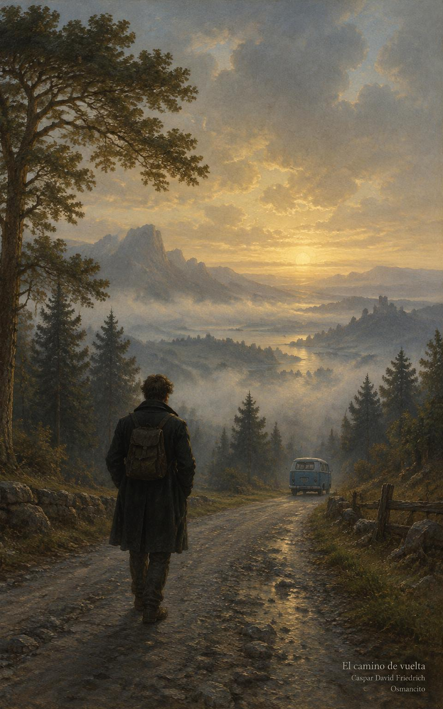
Casi terminamos:
I doubt if I’ve covered everything you need to know to become a better writer, and I’m sure I haven’t answered all your questions, but I have talked about those aspects of the writing life which I can discuss with at least some confidence.
Frase 3680
Dudo haber cubierto todo lo que necesitas saber para ser mejor escritor, y seguro que no he respondido a todas tus preguntas, pero he hablado de los aspectos de la vida de escritor sobre los que puedo discutir al menos con cierta confianza.
La confianza escaseó; sobraron dolor y dudas. Y a mitad del libro ocurrió algo decisivo:
I’ll tell you about it presently.
Frase 3687
Se lo contaré enseguida.
Por ahora: hizo lo mejor que pudo. Falta un asunto:
One more matter needs to be discussed, a matter that bears directly on that life-changer and one that I’ve touched on already, but indirectly.
Frase 3689
Queda un asunto por discutir, uno que guarda relación directa con ese cambio de vida y que ya he tocado, aunque indirectamente.
¿Lo haces por el dinero, cariño? No: escribió por pura alegría; quien escribe por alegría lo hace siempre. Escribir no es la vida, pero a veces es camino de vuelta a ella. Lo descubrió en 1999: una furgoneta azul casi lo mata.
© 2026 Osmancito